ABOUT THG PARIS
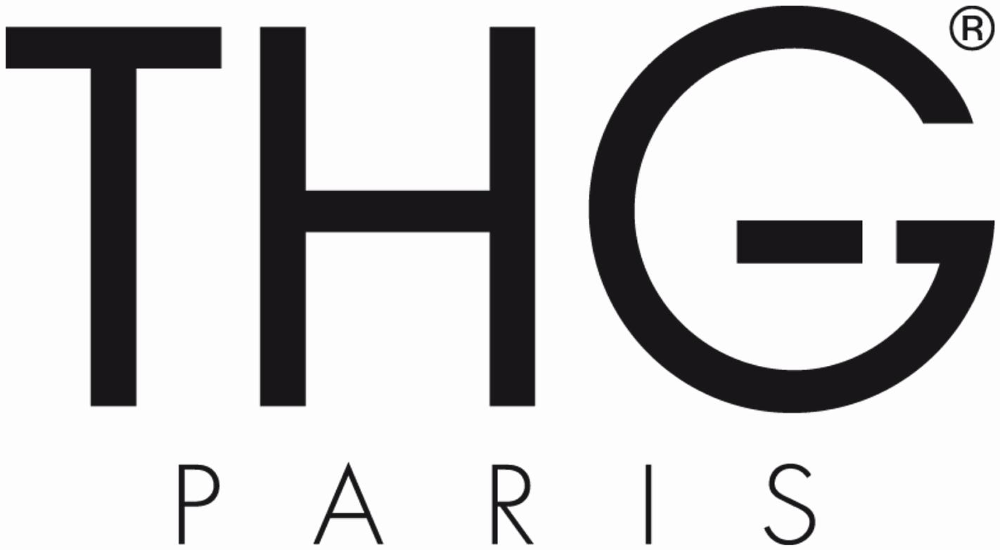
目录
01 开篇
2001 年，一位女建筑师走进法国北部索姆省的 Béthencourt-sur-Mer 工厂，带来一位游艇业主的特殊请求：这位业主是 René Lalique 水晶作品的收藏家，他希望把 Lalique 水晶装在自己游艇浴室的水龙头上。接下这张订单的，是一家名为 THG 的五金制造商——在那之前，它的主要产品是标准铜质水龙头与阀门。没有人把这张游艇订单当成一笔普通生意：它把一只天天被人手拧开的水龙头，与法国水晶工坊的收藏品放在了同一物件上。此后二十余年，Lalique、Baccarat、Daum、Bernardaud、Christofle 这些原本属于珠宝、水晶、瓷器与银器世界的名字，陆续出现在 THG 的目录上。
这家公司的名字来自三位创始人姓氏的首字母。1950 年，André Tétard、Julien Haudiquez 与 Alexandre Grisoni 在这座英吉利海峡畔的小镇开办"La Robinetterie de la Poste"（邮政五金厂），1956 年正式以 THG 命名；公司法定名称至今仍是"THG Paris Ets Tétard Haudiquez Grisoni"。它从铸造、机加工标准水龙头起步，在 1970 年代遇到珠宝设计师 Jean-Claude Delépine 后转向奢华，把"水龙头、奢侈与装饰合而为一"（le robinet, le luxe et la décoration ne font qu'un）做成了品牌信条。
术语注释：robinetterie——法语，指水龙头、阀门等卫浴五金及其制造行业。
今天的 THG 自称"卫浴五金的高级定制"（Haute couture de la robinetterie），以约 200 个系列、约 30 种饰面服务于全球 60 多个国家的酒店、豪宅与游艇，出口占比约 85%，并在 2012 年获得法国政府"活文化遗产企业"（Entreprise du Patrimoine Vivant，EPV）标签。它的全部制造仍集中在 Béthencourt-sur-Mer 那座约 2 万平方米的工厂里，没有外迁。2021 年，中国卫浴集团九牧（JOMOO）成为其控股股东；2026 年，品牌迎来创立七十周年，并启动面向 2035 年的工厂扩建。
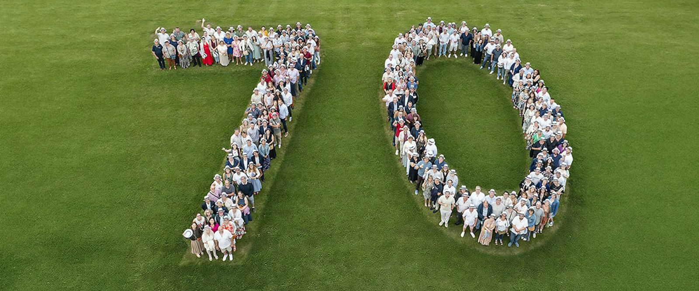
图：2026 年，Béthencourt-sur-Mer 工厂员工在草地上排出"70"字样——这家 1950 年创立的五金厂至今只有这一座制造基地。图源：THG Paris 官方品牌页。
02 品牌概述
THG Paris 是法国高端卫浴五金品牌，在法国北部索姆省（Hauts-de-France 大区，毗邻诺曼底海岸）的 Béthencourt-sur-Mer 自行设计并制造水龙头、混水阀、淋浴系统、浴室配件、厨房五金与加热毛巾架。它的产品以黄铜本体、手工抛光、铬/镍/24K 镀金与 PVD 饰面，以及 Lalique、Baccarat、Daum 水晶与 Bernardaud 瓷器装饰为识别特征。品牌现为九牧集团控股，但制造与设计团队仍留在法国原厂，2022 年起由职业经理人 David Bonnelle 担任董事长兼 CEO。
术语注释：PVD——物理气相沉积，一种在真空炉内把金属离子镀到工件表面的硬质镀层工艺。
| 项目 | 内容 |
|---|---|
| 品牌名 | THG Paris（法定名称 THG Paris Ets Tétard Haudiquez Grisoni · https://www.thg-paris.com） |
| 国家/地区 | 法国（总部与唯一工厂：35 rue Tournière, 80130 Béthencourt-sur-Mer, Somme；约 2 万平方米） |
| 成立时间 | 1950 年（三人创立 La Robinetterie de la Poste）；1956 年定名 THG；2003 年更名 THG Paris |
| 创始人 | André Tétard、Julien Haudiquez、Alexandre Grisoni（THG 即三人姓氏首字母） |
| 代表性设计人物 | Jean-Claude Delépine（1970 年代起合作，1995 年其公司 JCD Créations 被收购）；Studio THG Paris 内部设计工作室 |
| 其他关键人物 | Laurence Tétard 与丈夫 Michel Gosse（1987 年接班）；David Bonnelle（2022 年起任董事长兼 CEO） |
| 官方理念 | "Bain & Art de vivre"（沐浴与生活艺术）；"Haute couture de la robinetterie"（卫浴五金的高级定制）；"水龙头、奢侈与装饰合而为一" |
| 品牌归属 | 2021 年起由中国九牧集团（JOMOO）控股；此前为 Tétard 家族企业 |
| 核心业务 | 水龙头/混水阀、淋浴系统、浴室配件、厨房五金、加热毛巾架；酒店、住宅、游艇三大市场；定制（sur-mesure）工程 |
| 工艺与标签 | EPV 活文化遗产企业（2012）；Origine France Garantie（法国原产地保证）；约 200 个系列、约 30 种饰面、约 300 名员工、8 家海外子公司、出口约 85% |
| 经典产品 | Mandarine、Broadway、Art Déco、Cygne、Hirondelles、Métropolis（Lalique）、Pétale de Cristal（Baccarat）、Rose（Daum）、Mille Nuits（Baccarat）、ICON-X（Studio F. A. Porsche） |
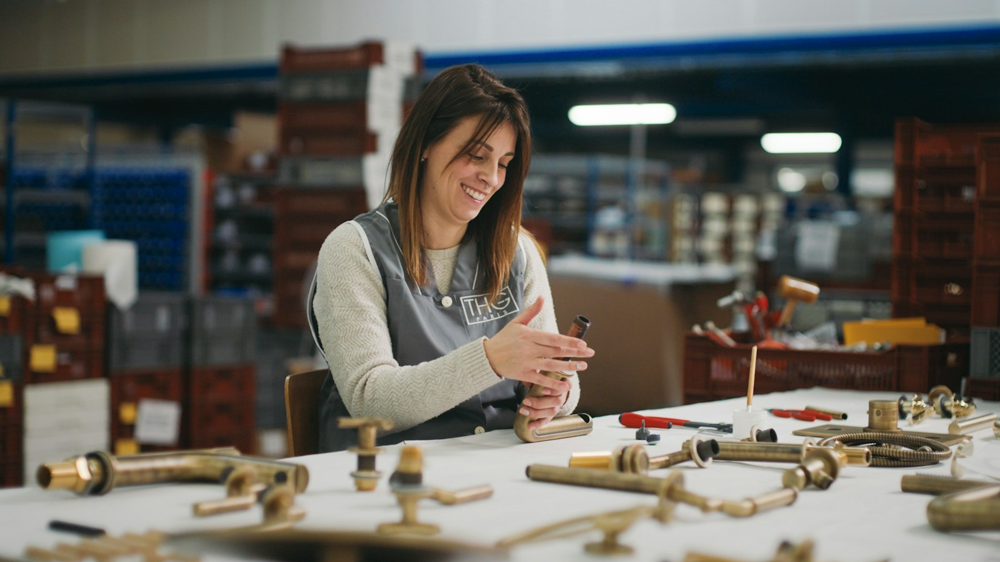
图：Béthencourt-sur-Mer 工厂车间——设计办公室、机加工、抛光、表面处理、装配与质检全部集中在同一座厂区。图源：THG Paris 官方工艺页。
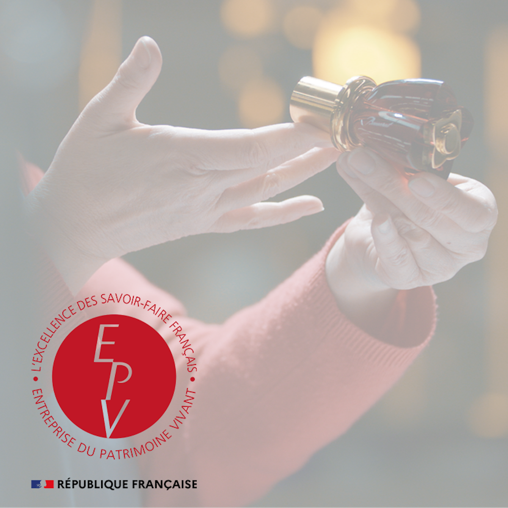
图：法国政府"活文化遗产企业"（EPV）标签，2012 年授予 THG，以认定其法国手工艺的稀有性与传承价值。图源：THG Paris 官方工艺页。
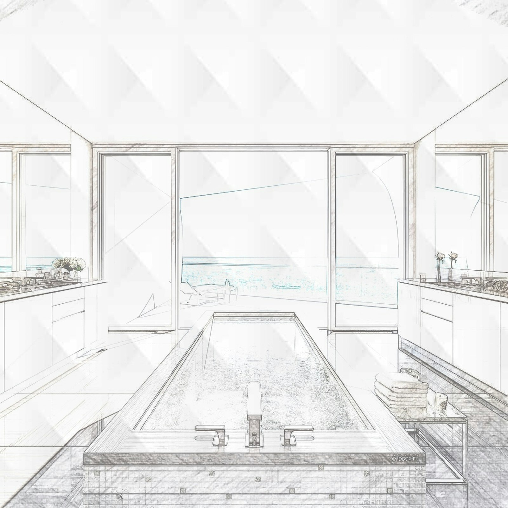
图：THG 定制项目浴室——酒店、豪宅与游艇的单件工程是品牌与规模化卫浴厂最直观的差别。图源：THG Paris 官方定制页。
03 Brand 品牌：从五金谷作坊到卫浴高定
五金谷：一座海岸小镇的产业基因
THG 的起点要放在法国北部的"五金谷"（Vimeu）里理解。索姆省与塞纳-马恩省沿海一带自 19 世纪起就是法国五金、制锁与水龙头产业的聚集区，镇上有大量铸造厂、机加工坊与世代相传的铜匠家庭。Béthencourt-sur-Mer 正是其中之一：本地工厂长期为全法的卫浴品牌代工标准铜件，工匠、模具与供应链在同一村镇内形成闭环。1950 年，André Tétard、Julien Haudiquez 与 Alexandre Grisoni 三人在这里创办"La Robinetterie de la Poste"——名字里的"邮政"指早期邮政系统与公共建筑的五金供应。
术语注释：Vimeu——法国索姆省西部的传统五金与制锁产业区，以铜加工闻名。
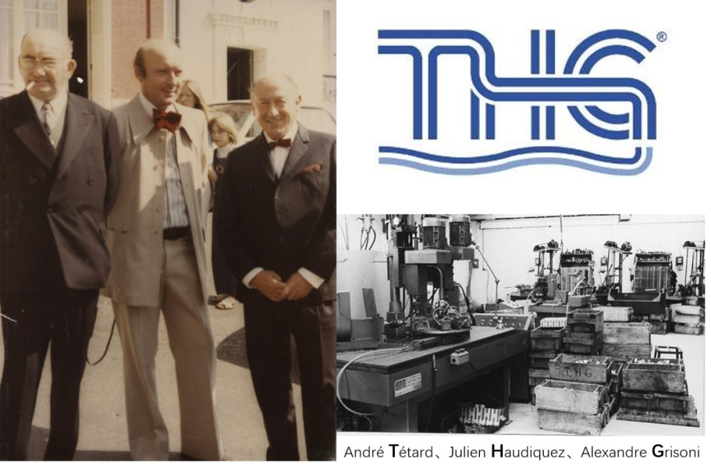
图：三位创始人 André Tétard、Julien Haudiquez、Alexandre Grisoni 与早期工厂设备——THG 三个字日后分别取自他们的姓氏。图源：THG Paris 官方品牌历史资料。
1956：三个字母与一家标准件厂
1956 年，工厂正式以三位创始人姓氏的首字母命名为 THG。此后约二十年，它是一家典型的法国本土五金制造商：用砂模铸造与车床加工生产标准化水龙头、阀门与配件，客户是公共工程与法国国内的卫浴渠道。公司从未离开过 Béthencourt-sur-Mer，法定名称里的"Ets Tétard Haudiquez Grisoni"（Tétard-Haudiquez-Grisoni 商号）一直保留到今天。这一时期建立的是制造底座：黄铜本体的精密机加工、电镀与装配能力，以及本地工匠的人才池。
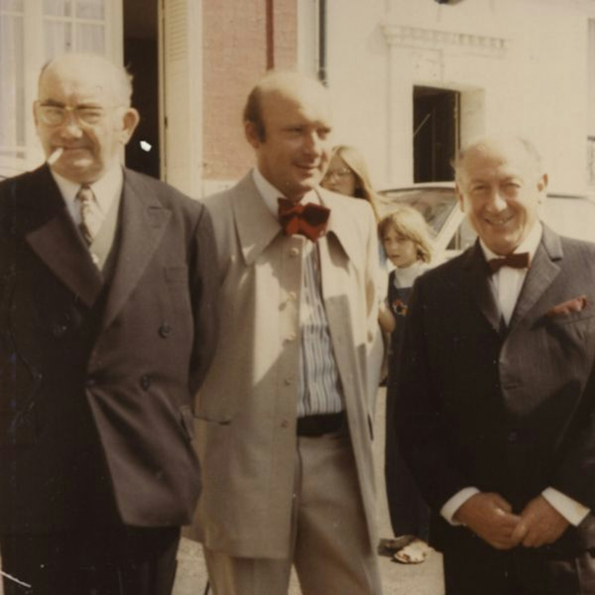
图：1956 年工厂定名 THG 时期的官方历史影像。图源：THG Paris 官方品牌页。
1960 年代：量产与标准目录
1960 年代的 THG 仍以标准件为主：镀铬面盆龙头、浴缸出水嘴、淋浴阀，走法国战后住宅与公共建筑的批量供应路线。官方保存的黑白厂照显示，这一时期车间以铸造、砂模与车床为核心，工匠在同一工位完成多道工序。与后来"高定"的叙事不同，此时的 THG 靠的是稳定的铜件质量与交付能力，而非装饰设计——但正是这一阶段的机加工与电镀底子，让它后来能够承接水晶与贵金属的精细装配。
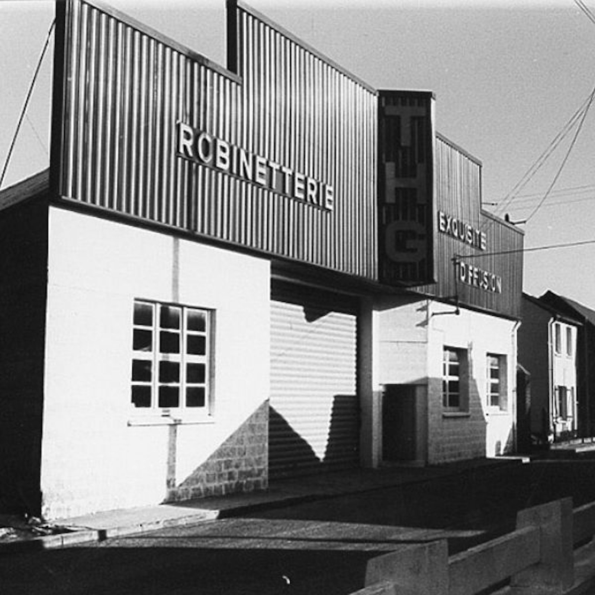
图：1960 年代的 THG 厂房——铸造与机加工车间，量产标准铜件是当时的主业。图源：THG Paris 官方品牌页。
1970 年代：珠宝设计师 Delépine 入场
转折发生在 1970 年代。THG 与珠宝设计师 Jean-Claude Delépine 开始合作，他是最早把时装与奢侈品的设计语言带入浴室的人之一。Delépine 为 THG 设计了 Broadway、Art Déco、Tradition、Vogue、Sully、Trocadéro 等一系列以古典法式装饰为母题的龙头，把铜件从工程产品变成带造型、饰面与珠宝式细节的装饰件。官方品牌史把这次合作描述为"决定性的"：THG 自此从标准五金转向奢华卫浴。
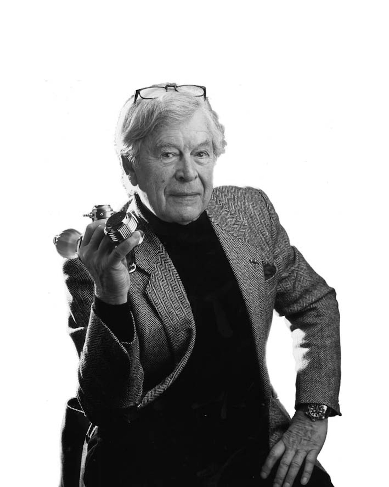
图：设计师 Jean-Claude Delépine——他把珠宝与时装的设计语言带进浴室，主导了 THG 1970 年代的转向。图源：THG Paris 官方设计师页。
1995：收购 JCD Créations，把设计收入旗下
1995 年，THG 收购了 Delépine 自己的公司 JCD Créations 及其全部设计，把这位合作者的作品库正式纳入品牌。这次收购让 Delépine 系列成为 THG 的长期资产：那些诞生于 1970 年代的造型在此后数十年里持续再版、更换饰面，并构成了品牌今天"Prestige"（古典/奢华）产品线的核心。JCD 的名字也长期保留在巴黎展厅的商业主体中。
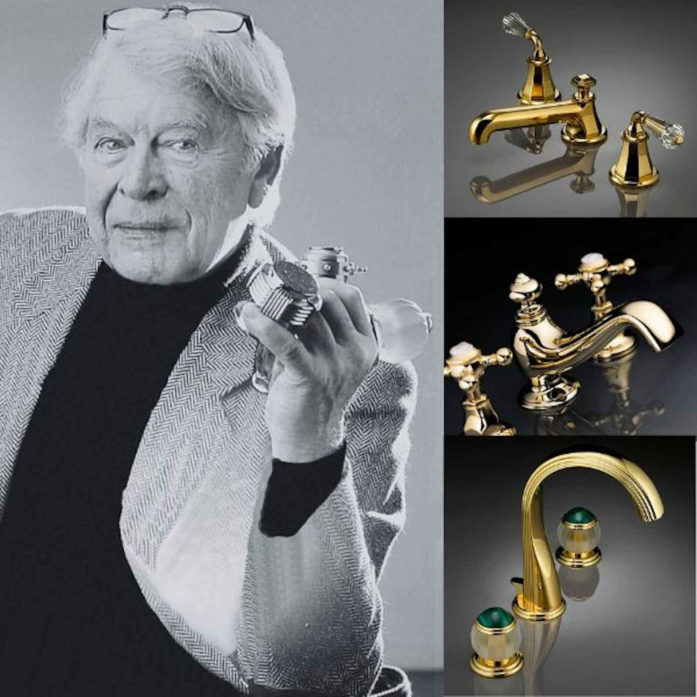
图：JCD Créations 时期的设计档案——1995 年 THG 收购该公司，把 Delépine 的全部设计收入旗下。图源：THG Paris 官方品牌页。
1987：家族第二代接班与奢华定位
1987 年，创始人 André Tétard 的女儿 Laurence Tétard 与丈夫 Michel Gosse 接掌公司。Gosse 是工程师出身，他把经营重心明确转向高端与出口：一方面压缩标准件的同质化竞争，另一方面强化装饰、饰面与定制能力，把 THG 推向法国宫廷式酒店与海外豪宅市场。这一阶段的制造没有换地点，而是在原厂内增加了手工抛光、贵金属电镀与单件装配的比重——从"工厂"向"工坊+工厂"混合体演进。
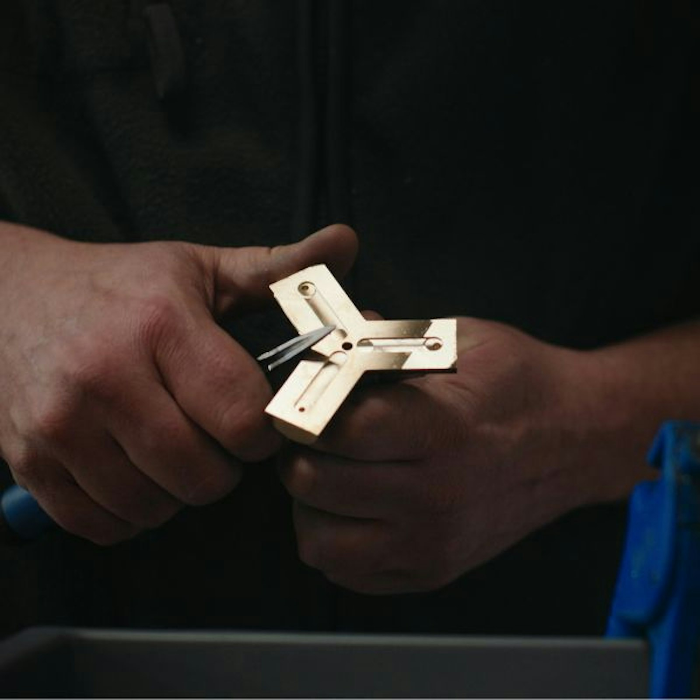
图：Béthencourt-sur-Mer 工厂的历史车间——第二代接班后，手工抛光与单件装配的比重持续增加。图源：THG Paris 官方工艺页。
铸造与砂模：没被放弃的第一道工序
在许多卫浴品牌把铸造外包、只保留组装的年代，THG 仍在原厂周边保留砂模铸造与翻砂工序。2019 年媒体进厂实拍记录了砂模、铜料与半成品同处一个车间的画面：复杂造型的出水嘴、装饰件与阀体仍先经铸造得到坯体，再转入精密机加工。这一工序是 Delépine 时代那些天鹅颈、桥接式巴洛克造型能被反复制造的前提——复杂的曲线外形无法只靠机加工切削出来。
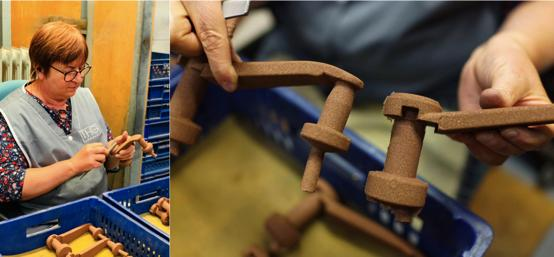
图：工厂内的砂模铸造——复杂造型的出水嘴与装饰件仍先经铸造得到坯体。图源：TOM 资讯 2019 年工厂参观实拍。
2000：游艇订单与 Lalique 的二十年
2001 年那张游艇订单（官方 Lalique 合作目录将其定在 2001 年）开启了 THG 与水晶工坊的长期联名。随后官方多次以"20 周年"对外表述，因此也有"2000 年起合作"的口径。Lalique 把 René Lalique 本人在 1920–1930 年代的经典浮雕——燕子、葡萄、牡丹、女性面具——以水晶的形式做进把手；THG 负责金属阀体、饰面与装配。2003 年公司更名 THG Paris，把"Paris"放进品牌名以强化法式奢侈品身份；同年与银器世家 Christofle 合作 Malmaison 系列。
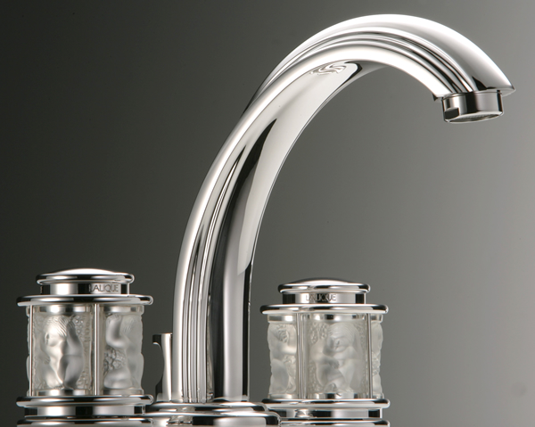
图：Lalique 浮雕水晶与铬色金属阀体——水晶负责装饰，金属负责出水与阀门，二者在同一座工厂完成装配。图源：Mavink 品牌图集（THG Paris）。
2003：更名 THG Paris 与全球网络
2003 年起，公司以"THG Paris"的名义进入国际市场，先后设立美国（1997 年先设 THG USA）、德国（2003）、中国（2011）、迪拜（2015）、新加坡（2023）、意大利（2024）等子公司，加上伦敦、巴黎、米兰、纽约、莫斯科、上海、迪拜、新加坡共 8 家海外分支，进入 60 多个国家。出口占比约 85%，但所有制造留在法国——这是它获得法国原产地保证（Origine France Garantie）与 EPV 标签的基础。
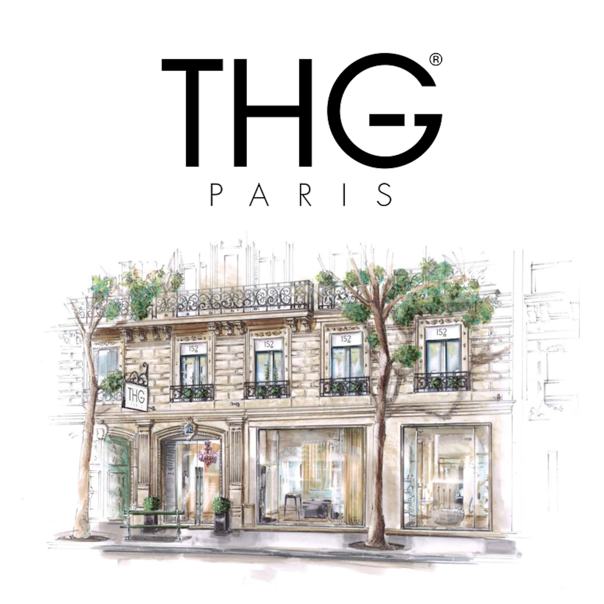
图：2003 年公司更名 THG Paris 后的品牌视觉——"Paris"被正式放进字标。图源：THG Paris 官方品牌页。
2012 EPV、2021 九牧、2026"面向 2035"
2012 年，THG 获得法国政府的 EPV 活文化遗产企业标签；同年与 Baccarat 开始合作，首个系列 Pétale de Cristal 由 Pierre-Yves Rochon 设计。2015 年它收购伦敦高端卫浴渠道 Bathrooms International。2021 年，中国九牧集团（JOMOO）在同一年收购 THG Paris 与德国橱柜品牌 Poggenpohl，成为控股股东，THG 由此结束家族控股，但品牌、工厂与设计团队均留在法国。2022 年，在工厂工作约三十年、曾任生产负责人的 David Bonnelle 出任董事长兼 CEO。2026 年，品牌宣布"Cap sur 2035"（面向 2035）的工厂扩建计划。
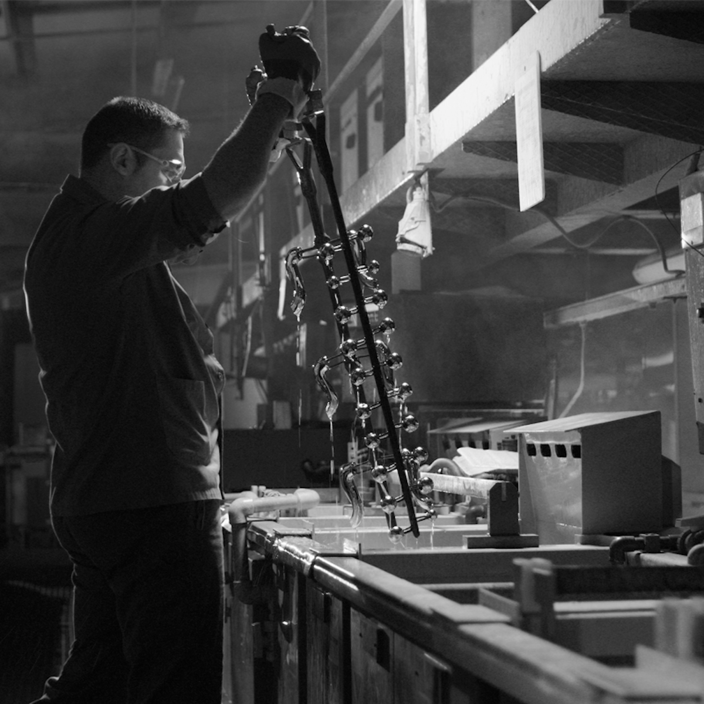
图：EPV"法国卓越工艺"标识——2012 年授牌，与 Origine France Garantie 共同构成 THG 法国制造的官方背书。图源：THG Paris 官方品牌页。
04 Category 品类与市场：高端卫浴五金的金字塔
一只水龙头由什么构成
高端卫浴五金（法国业内称 robinetterie，英美称 sanitary fittings / decorative plumbing）的核心是出水控制。一个面盆龙头套装（garniture）通常包括出水嘴、一个或两个控制把手（开关与冷热水）、内部阀芯（cartouche）以及暗装预埋盒（boîtier）。外露的把手、出水嘴、装饰盖称为"饰组"，真正的阀门与水路在墙体内。明装款与入墙款的区别，只在饰组与预埋盒的组合方式。
术语注释：garniture——法语，指外露的龙头饰组（把手、出水嘴、装饰盖等成套件）。
术语注释：阀芯（cartouche）——控制开关与冷热水混合比例的核心阀件，现代龙头多为陶瓷阀芯。
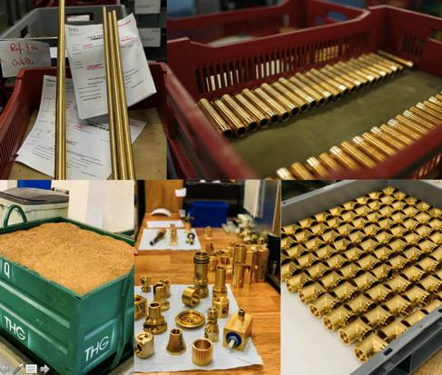
图：黄铜原料、砂料与机加工半成品——高端龙头的本体在行业内以黄铜为绝对主流材料。图源：TOM 资讯 2019 年工厂参观实拍。
恒温、入墙与法国标准
在混水阀之外，高端淋浴系统的核心是恒温混水阀（thermostatique）：它内部通常采用蜡质热敏感温元件（thermostatic cartridge），根据水温变化自动调节冷热水比例，防止出水骤冷骤热。行业常见标准为 NF EN 200；面向不同国家还有法国 ACS、德国 DVGW、瑞士 SVGW 等饮用水接触认证。THG 官方技术规格书标注的恒温阀体为 ¾ 英寸口径、约 60 升/分钟流量。产品形态上，品牌覆盖面盆、浴缸、淋浴、厨房与配件全线，并提供壁挂、三孔、入墙暗装、落地缸边龙头等多种安装方式。
术语注释：恒温混水阀（thermostatique）——内置热敏元件、自动稳定出水温度的淋浴阀。
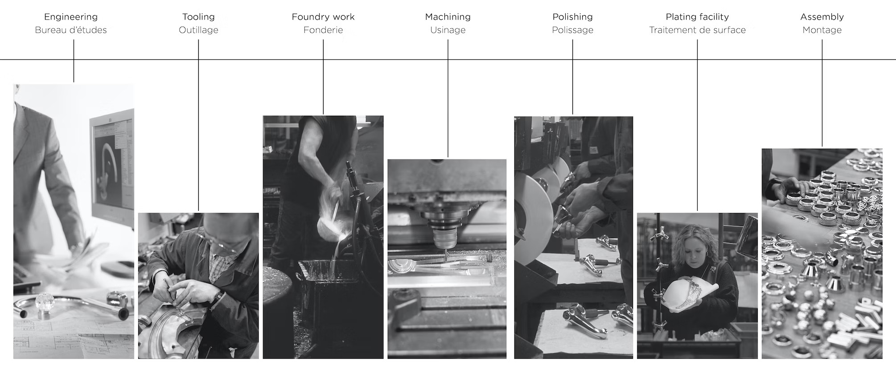
图：THG 官方工艺全流程——设计、模具、铸造、机加工、抛光、电镀、装配，阀体与阀芯的集成在同一厂区完成。图源：三玮卫浴 THG 品牌工艺页。
从标准件到奢侈品的价格金字塔
全球水龙头市场的商业估算口径差异较大（2024 年约 210 亿–380 亿美元区间，多家机构数字并列），高端卫浴细分市场约 168 亿美元（2025 年，Dataintelo 口径，属方向性参考而非精确值）。在这一市场内，THG 处在装饰性五金的顶端，价格随把手材质与饰面急剧拉开。下表为 2026 年 10 月 27 日美国授权经销商处、同一类"三孔面盆龙头组"的挂价实查（美元），可以直观看到从入门镀铬到水晶/孔雀石旗舰的跨度。
术语注释：PVD——物理气相沉积，真空炉内镀出的硬质彩色镀层，常见于高端深色/金色饰面。
| 档位 | 代表系列（三孔面盆龙头组） | 2026-10-27 美国挂价（美元） | 价差逻辑 |
|---|---|---|---|
| 入门 | Yoko | 1,299 | 简洁金属本体、镀铬/镍饰面 |
| 经典 | Art Déco | 2,187 | Delépine 装饰造型、28 种饰面 |
| 当代设计师 | System Diamond Metal（Arik Levy） | 3,148 | 设计师署名、几何镶嵌 |
| 水晶合作 | Rose × Daum | 7,627 | Daum 水晶玫瑰把手 |
| 半宝石旗舰 | Cheverny（孔雀石） | 9,477 | 天然孔雀石镶嵌、手工饰面 |
作为对照，英国老牌装饰五金渠道（如 Thomas Crapper）的同档产品挂价约 449–3,119 英镑。法国市场方面，THG 入门镀铬龙头的厂商公开价约 841 欧元（含税），而水晶、半宝石与定制款通常不标统一零售价，需经经销商报价。
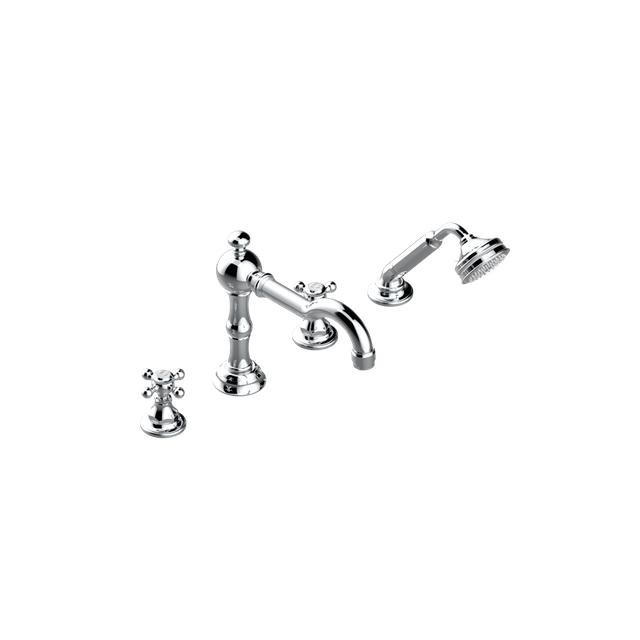
图：铬色缸边龙头与手持花洒——价格金字塔的入门档位，靠金属本体与抛光等级而非装饰材料定价。图源：Edilceram Design THG 品牌页。
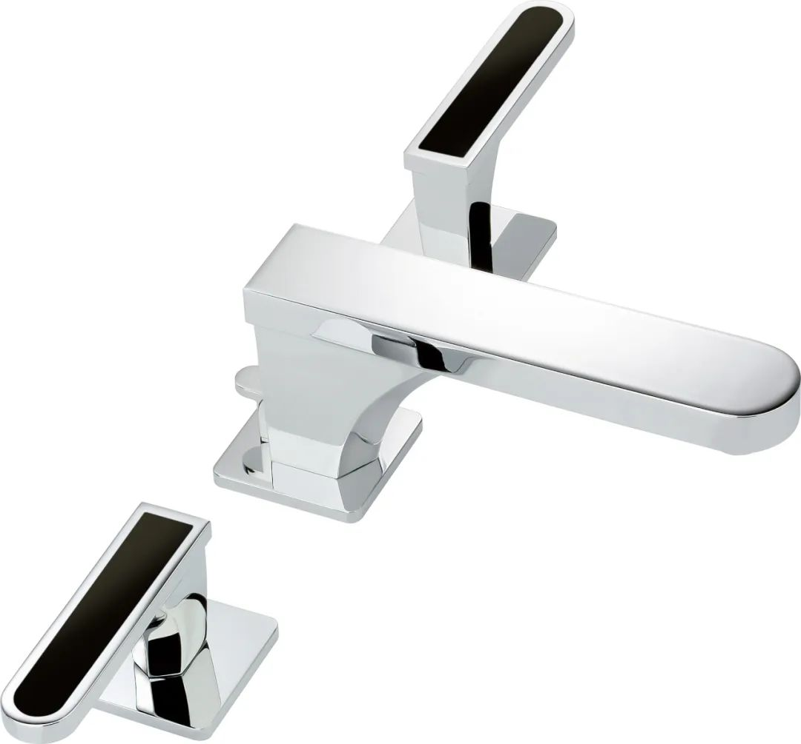
图：黑色嵌件单杆龙头——陶瓷阀芯与单杆把手是当代入门到中高端档位的典型结构。图源：HDE Expo 2025 THG 展位图。
05 User 用户与场景：酒店、豪宅与游艇
谁在买、谁在选、谁在用
高端卫浴五金的购买决策链与普通建材完全不同。最终使用者是酒店住客、豪宅主人或游艇船东，但掏钱购买的通常是酒店开发商、设计工程总包或业主本人；真正决定"用哪一只龙头"的，是建筑师与室内设计师——他们在图纸与样板阶段指定品牌和型号，再由经销商或品牌项目部门供货。THG 把自己的市场明确划分为三大块：酒店（hôtellerie）、高端住宅（résidentiel）与游艇（yachts）。
设计师即渠道
在这个品类里，顶级设计师是最重要的"渠道"。Pierre-Yves Rochon、Alberto Pinto、Andrée Putman、Gilles & Boissier、Champalimaud、Jamie Drake 等设计师本身就是豪华酒店与游艇的指定者，THG 与他们的合作系列同时也是他们工程里的指定产品。THG 官方展厅的核心功能不是零售成交，而是让设计师带着业主挑选造型、饰面色板与镶嵌材料，再由项目部门报价。
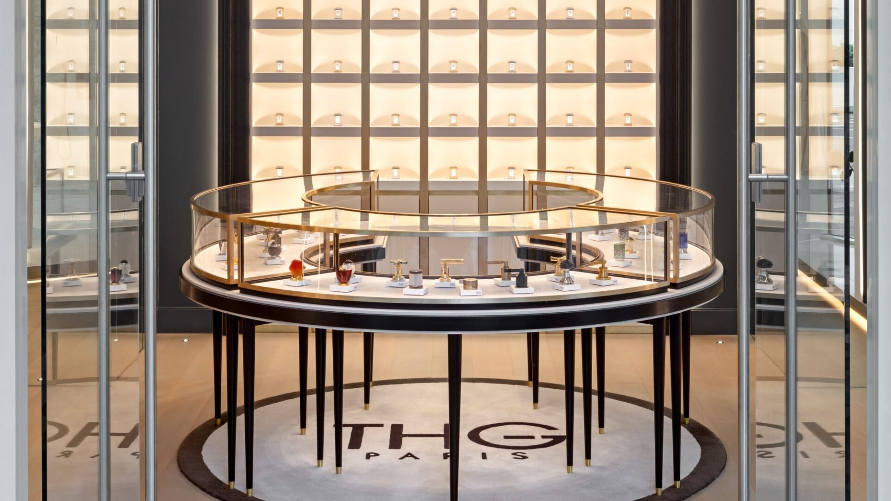
图：伦敦 Design Centre Chelsea Harbour 的 THG 展厅——圆形玻璃展柜按饰面与系列陈列，主要面向设计师与业主。图源：DCCH 官方展厅页。
酒店：宫殿翻新的样板间
THG 最稳定的市场是欧洲宫殿级酒店（Palace）与豪华连锁的翻新工程。Hôtel de Crillon、Plaza Athénée、Shangri-La Paris、Four Seasons George V、The Dorchester 等都出现在官方工程合同册的客户名录中。酒店把浴室当作与客房同等重要的品牌体验，愿意为水晶、镀金与定制饰面支付溢价；而一处宫殿酒店的样板间，又会成为同一设计师后续项目的范本。
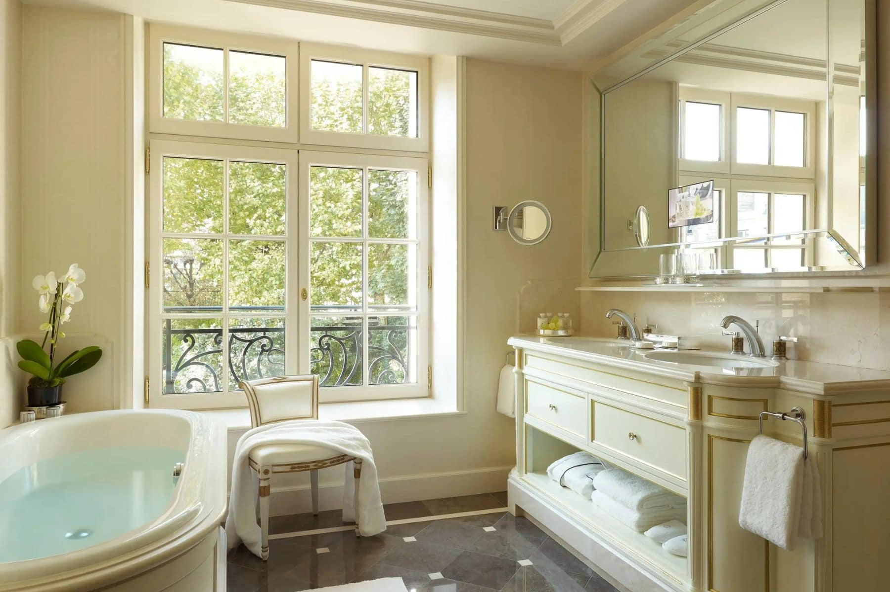
图：巴黎香格里拉酒店浴室——该项目由 Pierre-Yves Rochon 设计，列于 THG 官方工程合同册的参考客户名录中。图源：Outoria 巴黎香格里拉专题。
豪宅与游艇：另一种"高定"
私人豪宅与超级游艇是定制（sur-mesure）服务的主要场景。游艇对尺寸、重量、耐腐蚀与饰面有特殊要求，THG 设有独立的游艇定制目录（Yachting Bathroom Bespoke），可按船内空间改尺寸、改饰面；2001 年第一张 Lalique 水晶订单就来自一艘游艇。业主往往不直接面对品牌，而是通过设计师或船厂提出需求，交付周期远长于标准目录产品。
术语注释：sur-mesure——法语，"量身定制"，按单件项目的图纸与饰面要求制造。
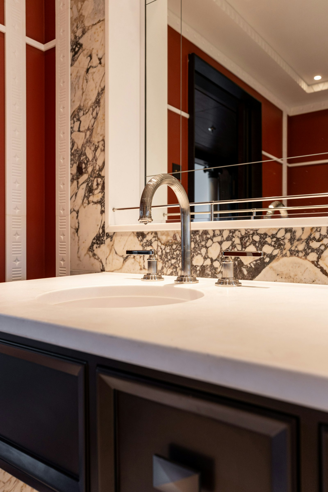
图：Orient Express Corinthian 帆船游艇套房浴室——THG 设有独立游艇定制目录，可按船内空间改尺寸与饰面。图源：THG Paris 官方游艇项目页。
06 Positioning 定位：水龙头、奢侈与装饰合而为一
参照系：不是建材，是奢侈品
THG 对自己的定位不落在"卫浴品牌"这一品类坐标里，而落在"法国奢侈品工坊"的坐标里。它的官网把品牌与水晶、瓷器、银器名坊并列叙述，反复强调"高定"（haute couture）而非"制造"（manufacture）。参照系选择的结果是：它的竞争对手不是普通建材龙头，而是被放在装饰艺术与工艺品货架上比较的对象；它的价格锚点也不按阀芯成本定价，而按水晶、半宝石、贵金属与手工工时而定。
核心主张的三个落点
第一，"水龙头、奢侈与装饰合而为一"——对应的产品落点是把 Lalique、Baccarat、Daum、Bernardaud、Christofle 的装饰直接做进把手，而不是另配一件水晶摆件。第二，"掌控每一道工序"（Maîtriser chaque étape）——对应的是 Béthencourt-sur-Mer 一座工厂内完成设计、机加工、抛光、电镀、装配与质检，这是 EPV 与 Origine France Garantie 标签的落点。第三，"高定"——对应约 200 个系列、约 30 种饰面以及单件项目定制能力。
术语注释：EPV——Entreprise du Patrimoine Vivant，法国经济部颁发的"活文化遗产企业"标签，认定稀有工艺与传承。
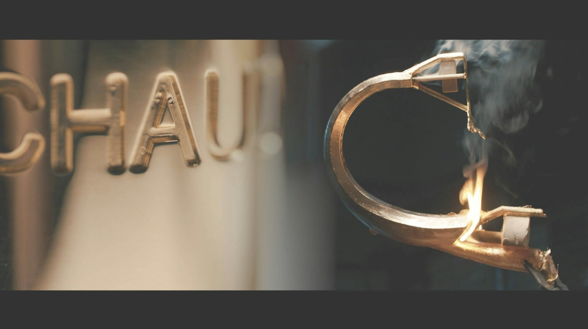
图：以火焰加热、修整黄铜饰件的工艺画面——"高定"的第二落点，是在同一座工厂内掌控从铸造到表面处理的每一道工序。图源：THG Paris 官方工艺影片。
与同类高端品牌的分野
在高端卫浴五金这一品类内，意大利品牌偏设计潮流、德国品牌偏技术与精密、英国与美国品牌偏古典五金与零售渠道。THG 占据的是另一个位置：法式古典装饰谱系 + 法国奢侈品工坊联名 + 法国本土一体制造。它的差异点不是阀芯技术（那是行业共享的基础），而是水晶/瓷器/半宝石把手的深度、饰面与定制的广度，以及被宫殿级酒店反复验证的工程履历。这一定位让它在装饰性上几乎没有完全对标的对手，也让它对水晶工坊的供给与联名节奏高度依赖。
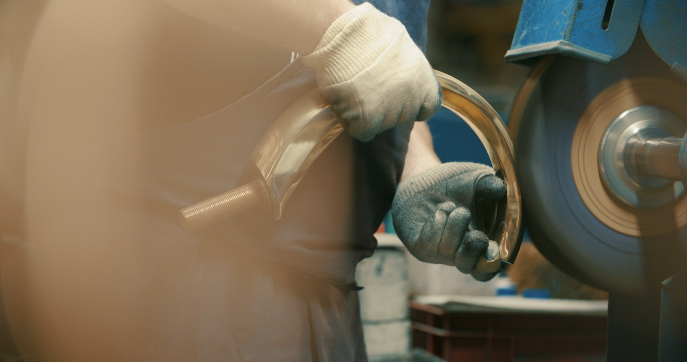
图：手工抛光后的饰件——"高定"定位最终落在可触摸的金属表面质量上。图源：THG Paris 官方工艺页。
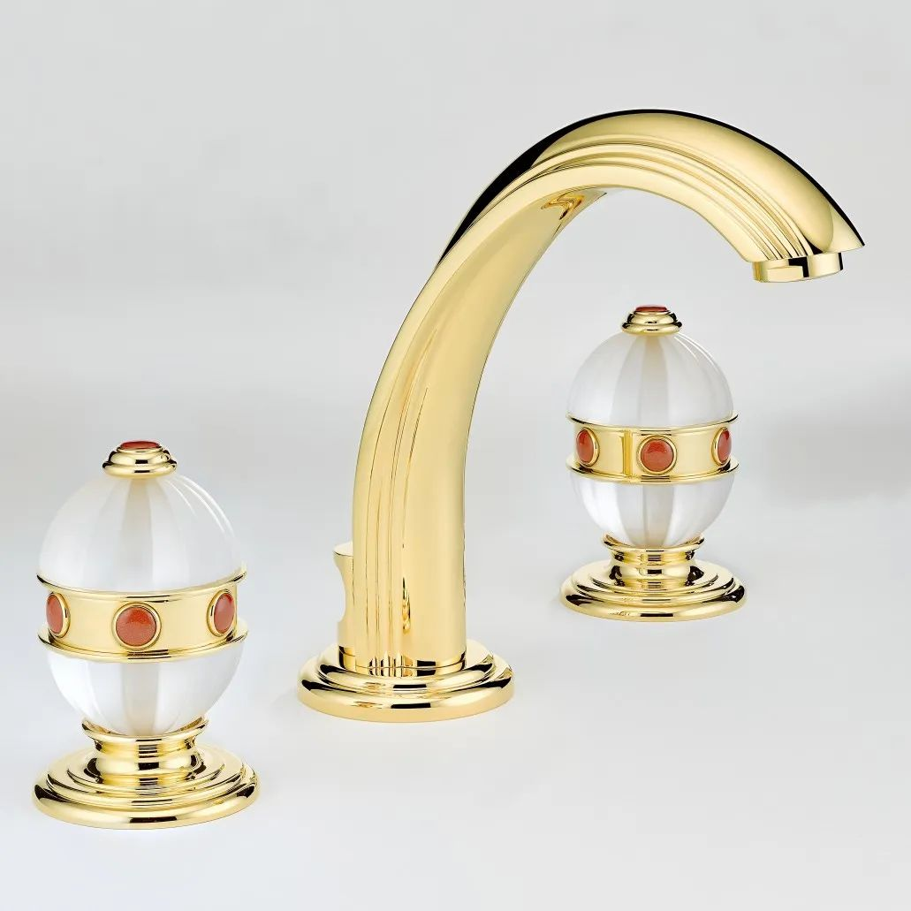
图：金色基座配白色饰瓷的三孔龙头——把瓷坊装饰做进龙头，是"水龙头与装饰合一"的直观注脚。图源：HDE Expo 2025 THG 展位图。
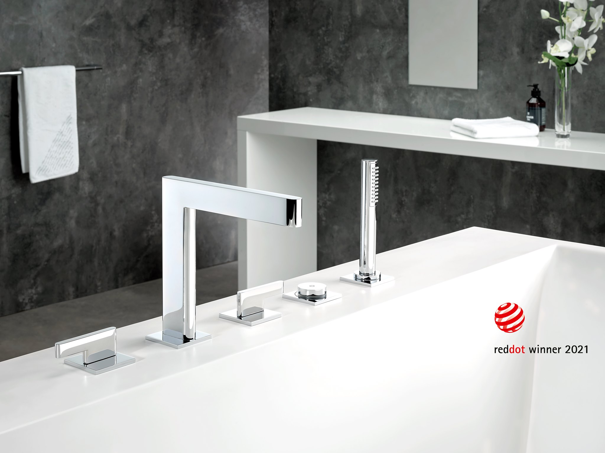
图：现代铬色缸边龙头——古典装饰之外，THG 也用当代线覆盖极简空间，证明其产品线跨越两种风格。图源：Creative Home 品牌报道。
07 Product 产品：从 Mandarine 到 Mille Nuits 的高定目录
产品组合与命名逻辑
THG 的约 200 个系列可分为两条主线与一条联名线。其一是"Prestige"（古典/奢华）线，由 1970 年代 Delépine 奠定的法式古典与装饰艺术造型构成，如 Broadway、Art Déco、Tradition、Mandarine、Cygne；其二是"Contemporain"（当代）线，从 1990 年代起随设计师合作逐步展开，如 Profil、Le 11、System、Les Ondes、ICON-X；第三条是与水晶、瓷器、银器名坊的联名线，合作方包括 Lalique、Baccarat、Daum、Bernardaud、Christofle、Haviland，代表如 Hirondelles、Métropolis、Pétale de Cristal、Mille Nuits、Rose、Malmaison、Poèmes。每个系列再按把手形制（十字把 croisillon 或单杆 manette）、饰面（finition）与安装方式细分为数十个料号。
术语注释：croisillon——十字形把手；manette——单杆手柄，同一系列常见两种把手形态。
术语注释：finition——饰面/镀层色，THG 目录中以代码（如 A02 铬、B01 镍）标识，约 30 种。
THG 官方从不为单款产品标注精确的设计年份，而是以"1970 年代 Delépine 合作期""2000 年起 Lalique 合作""2012 年 Baccarat 合作"等时间段定位；下表与正文的年份因此区分为官方年表可锚定的年代与"官方未标注"，凡无法证实的具体年份不做推断。
| 名称 | 设计年份 | 设计师 | 简介 |
|---|---|---|---|
| Broadway | 1970 年代 | Jean-Claude Delépine | 桥接式三孔龙头，融合美式 Belle Époque 与法式线条，奢华线起点之一 |
| Art Déco | 1970 年代 | Jean-Claude Delépine | 阶梯、扇形几何，致敬 1930 年代装饰艺术，28 种饰面 |
| Tradition | 1970 年代 | Jean-Claude Delépine | 古典基座与弯角，奢华古典线的母型 |
| Mandarine | 1970 年代 | Jean-Claude Delépine | 官方称"THG 图标"，瓜棱形水晶把手 |
| Cygne | 官方未标注 | THG 工坊 | 天鹅喙形出水嘴，雕塑式巴洛克龙头 |
| Vogue | 1970 年代 | Jean-Claude Delépine | 珠宝式半宝石镶嵌系列（青金、孔雀石等） |
| Sully | 1970 年代 | Jean-Claude Delépine | 古典柱头与法式王朝风 |
| Trocadéro | 1970 年代 | Jean-Claude Delépine | 孔雀石镶嵌，以巴黎街区命名 |
| Hirondelles | 2000 年代起 | Lalique × THG | 春燕浮雕水晶把手 |
| Métropolis | 2000 年代起 | Lalique（1928 母题） | 葡萄浮雕水晶，母题曾饰于东方快车 |
| Ange | 2000 年代起 | Lalique × THG | 天使浮雕水晶把手 |
| Naïade | 2000 年代起 | Lalique × THG | 水泽仙女浮雕水晶 |
| Panthère | 2000 年代起 | Lalique × THG | 黑豹浮雕水晶 |
| Masque de Femme | 2000 年代起 | Lalique（1935 母题） | 女性面具浮雕，源自 René Lalique 1935 年造型 |
| Bambou | 2000 年代起 | Lalique × THG | 竹节浮雕水晶 |
| Dahlia | 2000 年代起 | Lalique（1931 母题） | 大丽菊纹，复刻 1931 年水晶粉盒 |
| Malmaison | 2003 | Christofle × THG | 帝政与巴洛克金属雕刻 |
| Faubourg | 2005 起 | Pierre-Yves Rochon | 极简金属线，白瓷/黑瓷/金属多版本 |
| Profil | 2007 | Jamie Drake | 雕塑把手嵌 Lalique 水晶/黑玛瑙，首个美国明星设计师系列 |
| Le 11 | 约 2005–2010 | Alberto Pinto | 水刀片出水成直角，命名自事务所门牌号 |
| Poèmes | 约 2009 | Chantal Thomass × Bernardaud | 白瓷、银丝带与拉扣，内衣语汇 |
| Rose | 2009 起 | Daum × THG | 脱蜡水晶粉玫瑰把手 |
| Marquise Gold décor | 约 2010 | Bernardaud × THG | 利摩日白瓷金饰，复刻 18–19 世纪纹样 |
| Pétale de Cristal | 2012 | Pierre-Yves Rochon × Baccarat | THG×Baccarat 开门系列，花瓣水晶 |
| West Coast Metal | 约 2012 | THG 工坊 | 金属嵌件机刻雕花（guilloché） |
| Le 9 | 2019 目录收录 | Pierre-Yves Rochon | 门牌号命名，howlite/黑大理石镶嵌 |
| System | 约 2015 | Arik Levy | 模块化"水龙头即珠宝"设计师系列 |
| Collection O | 2018 | Studio Putman × Christofle | 用于巴黎 Hôtel de Crillon 玛丽·安托瓦内特套房 |
| Les Ondes | 约 2019–2020 | Gilles & Boissier | 十面体底座加三叉戟把手 |
| ICON-X | 2021 | Studio F. A. Porsche | 电子件与新材料，2021 红点产品设计奖 |
| Mille Nuits | 2025 | Baccarat × Mathias | 复用 1999 年 Baccarat 吊灯母题，米兰首发 |
| Montaigne | 约 2024 | Stéphanie Coutas | 原生黄铜与天然大理石 |
| Marcel | 2026 | Katharine Pooley | 包豪斯灵感，金属嵌木皮 |
| Estrela | 2026 | Champalimaud | 酒店设计师署名，进入东方快车游艇 |
| Hamptons | 2026 | Charles Zana | 机械精度与金属感性 |
| Zoom | 2026 | Jean-Michel Wilmotte | 建筑大师极简线 |
| Beaubourg | 官方未标注 | Studio THG Paris | 内部工作室当代系列 |
| Charleston | 官方未标注 | Studio THG Paris | 1920 年代曲线节奏 |
| Yoko | 官方未标注 | THG 工坊 | 入门级当代金属系列 |
| Grand Central | 官方未标注 | THG 工坊 | 美式都会风装饰系列 |
Broadway（1970 年代，Jean-Claude Delépine）
1970 年代的 THG 面临一次定位抉择：继续做法国国内的标准铜件，还是跟随正在兴起的高端装饰市场做"有造型的水龙头"。此时曾为珠宝品牌做设计的 Jean-Claude Delépine 进入公司，他主张把卫浴五金当作首饰与家具来设计。Broadway 是这一时期的代表：它是一只桥接式三孔面盆龙头（bridged three-hole mixer），两个把手与出水嘴由一条弧形横梁连成一体，整体抬高、线条修长，融合了美式 Belle Époque 的舒展与法国古典的弯颈曲线。
术语注释：三孔龙头（trois trous）——面盆上分别安装出水嘴与两个把手的三件套，是欧式奢华龙头的典型形制。
在工程层面，Broadway 的桥接横梁要求铸件在弯曲后保持壁厚均匀，出水嘴与把手孔位的同轴度要求高，这正是 THG 砂模铸造与精密机加工底子的用武之处。它的把手为十字形，出水嘴是优雅的外翻弧线；金属本体为黄铜，表面覆盖手工抛光后的铬、镍或镀金等多种饰面，在同一造型上快速切换风格。它没有复杂的机构创新，卖点全部集中在比例、曲线与表面光泽——这奠定了 Delépine 系列"造型先行"的共同逻辑。
Broadway 推出后成为 THG 打入美国市场的早期名片之一，并在此后近半个世纪里持续出现在官方 Prestige 画册与经销商目录中。它与后续的 Art Déco、Tradition、Vogue、Sully 一起构成了 Delépine 古典家族，也定义了外界对"THG 风格"的第一印象：一只像首饰一样的法式龙头。
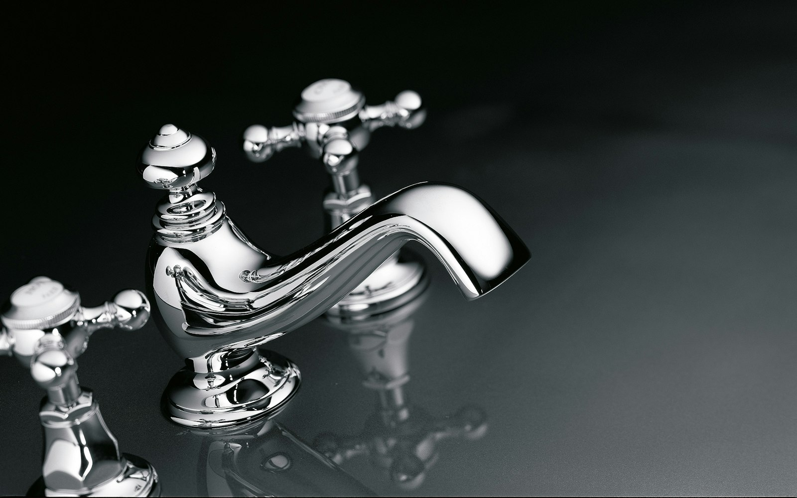
图：Broadway（1970 年代）桥接式三孔龙头主视觉——两个把手与出水嘴由弧形横梁连成一体。图源：THG Paris 官方产品页。
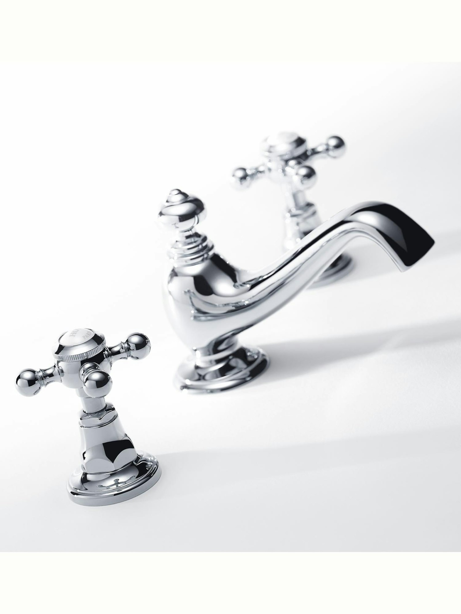
图：Broadway 浴室场景——修长的桥接横梁与外翻曲线出水嘴是其识别点。图源：THG Paris 官方产品页。
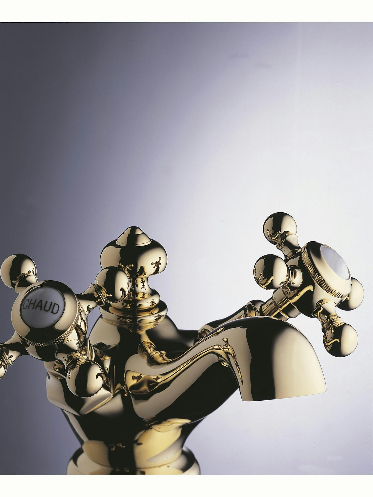
图：Broadway 把手与出水嘴特写——同一造型可切换铬、镍、镀金等多种饰面。图源：THG Paris 官方产品页。
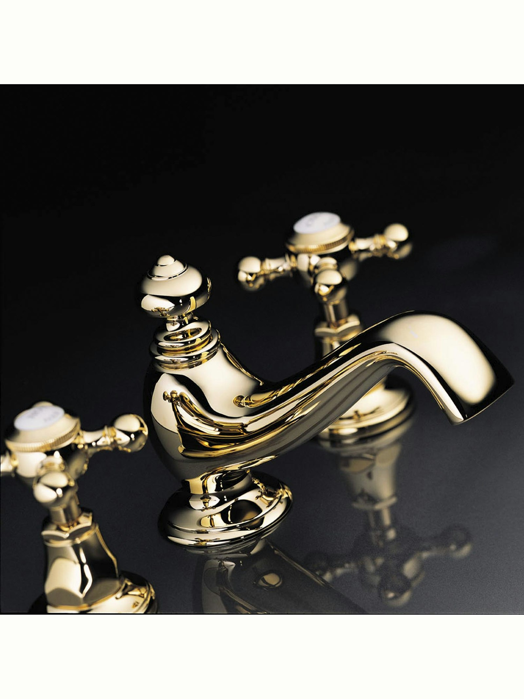
图：Broadway 在古典浴室中的整体效果——它是 THG 打入美国市场的早期名片之一。图源：THG Paris 官方产品页。
Art Déco 与 Tradition（1970 年代，Jean-Claude Delépine）
如果说 Broadway 偏向 Belle Époque 的曲线，Art Déco 与 Tradition 则把另一段法国风格史搬进了浴室。Art Déco 借鉴 1930 年代装饰艺术的阶梯、扇形与几何对称，把手与底座做成层层收分的方台，出水嘴以直线和折角为主；Tradition 则回到更繁复的古典基座，弯角、装饰盖与把手均做加厚处理。两者都出自 Delépine，是同一种"在水龙头上引用法国建筑史"的方法的两个方向。
术语注释：Art Déco——装饰艺术，1920–1930 年代流行于法国的几何化装饰风格，以阶梯、扇形与放射纹样为特征。
Art Déco 系列在官方目录中提供多达 28 种饰面，从铬、镍、镀金到 PVD 深色与氧化做旧，是 THG 饰面宽度的代表性案例。结构上，它的几何件对铸造与机加工的直线度要求更高，方台与立缝的对齐要依靠手工修整；Tradition 的古典基座则考验抛光师在曲面上保持镀层均匀。两者共同说明，THG 的"装饰"不是后期贴花，而是在铸造阶段就决定造型、再由手工逐件完成的工艺。
这两个系列在几十年里没有颠覆性的技术更新，却持续被宫殿酒店与设计师选用。它们证明了 THG 的另一条产品逻辑：当造型被固定为一种"法式风格符号"，它的生命周期可以远长于普通消费品。
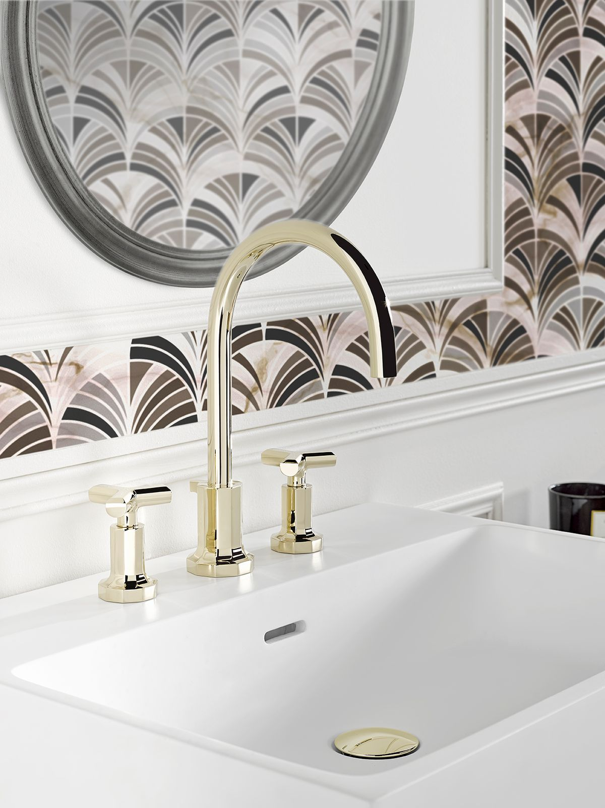
图：Art Déco 金色龙头在装饰艺术风格浴室中——阶梯、扇形与几何对称是其母题。图源：Réseau Excellence THG 机构页。
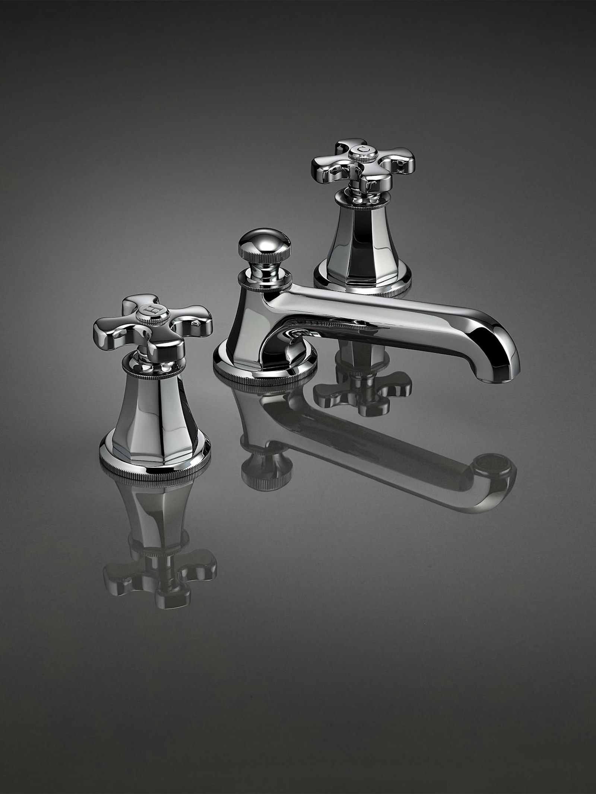
图：Art Déco 三孔龙头——方台层层收分，出水嘴以直线和折角为主。图源：THG Paris 官方产品页。
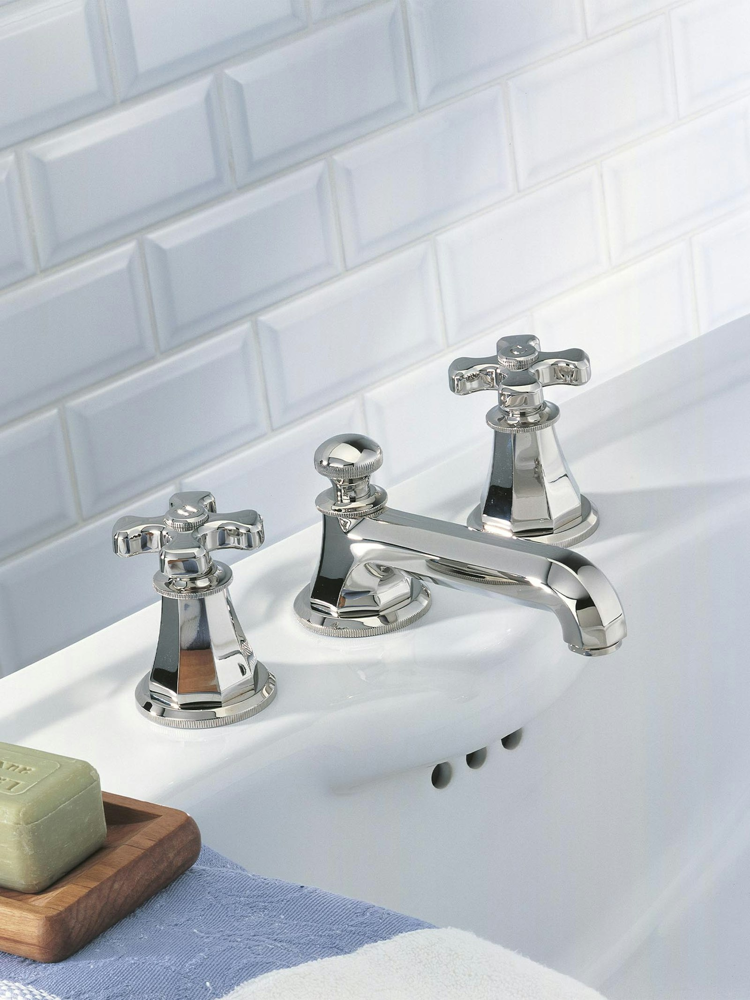
图：Art Déco 把手与基座特写——几何件对铸造与机加工的直线度要求更高。图源：THG Paris 官方产品页。
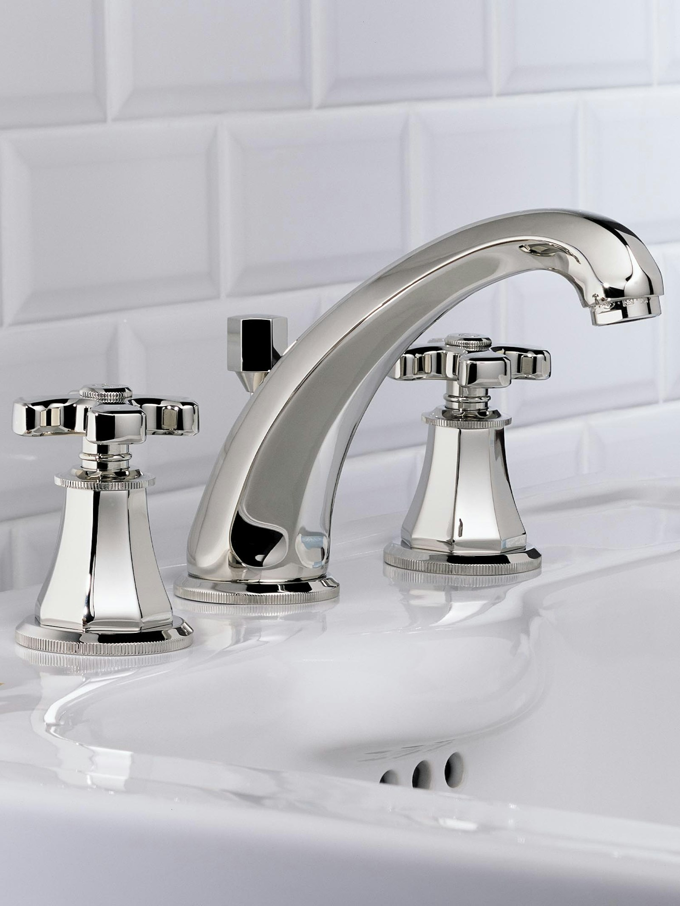
图：Art Déco 系列提供 28 种饰面，是 THG 饰面宽度的代表案例。图源：THG Paris 官方产品页。
Mandarine（1970 年代，Jean-Claude Delépine）
在所有 THG 古典产品中，官方给 Mandarine 的称谓最高——它在产品页上被称为"THG 的图标与法式优雅的象征"。它的造型在 Delépine 系列里也最容易被一眼记住：把手是一颗竖直、饱满、带瓜棱的"橘子"（mandarine），棱面从顶端向四周均匀收分，像一枚微缩的水晶或玻璃果实。
Mandarine 的关键设计决定是把把手从"可旋转的杆"重新定义为"可被握住的装饰件"。瓜棱表面既增加了手指拧动时的摩擦力，又在光线折射时形成连续高光——把手因此既是功能件，也是整件龙头的视觉焦点。水晶款采用通透水晶，铬色或金色金属款则在棱面抛光后镀亮；圆润的水晶果实与下方纤细的金属出水嘴形成体量对比。
术语注释：瓜棱（pansu / facetté）——把器物表面做成均匀分瓣的棱面，常见于水晶果枝与古典器皿。
这一造型把 Delépine 的"珠宝式龙头"主张推到了最直观的程度：一只水龙头的把手长得像一颗能握在手里的水晶橘子。它成为 THG 半个世纪以来被复刻、被换饰面、被搭配水晶与琥珀色材料最多的母型之一，也让"果实形把手"成为品牌的一种隐性符号。
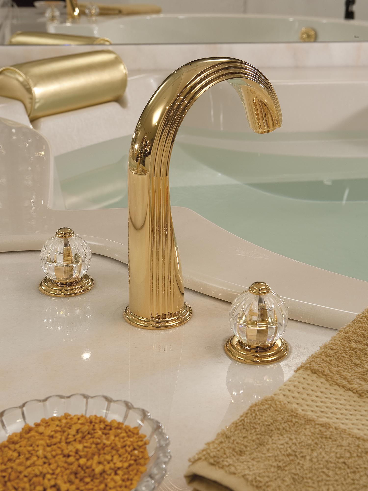
图：Mandarine 金色基座配瓜棱水晶把手的浴室场景——官方称其为"THG 的图标"。图源：THG Paris 官方产品页。
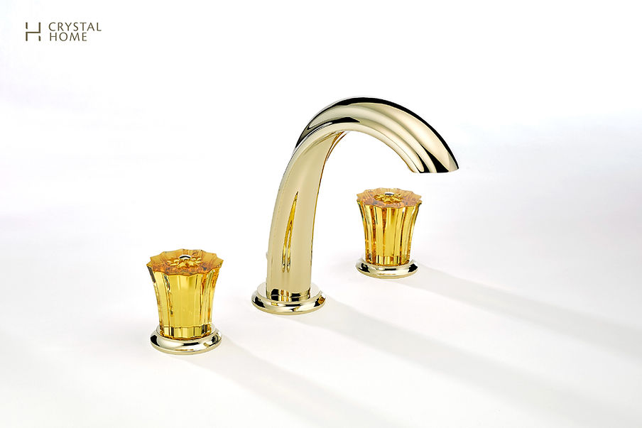
图：Mandarine 金色琥珀水晶把手产品图——瓜棱在光线下形成连续高光。图源：Crystal Home Bangkok THG 专题。
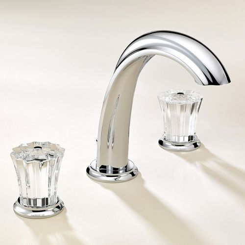
图：Mandarine 铬色透明水晶三孔款——水晶果实与纤细金属出水嘴形成体量对比。图源：Archiexpo THG 目录。
Cygne（THG 工坊，官方未标注年份）
Cygne（法语"天鹅"）是 THG 古典线中最具雕塑感的一只。它的出水嘴不是普通的弯管，而是一只昂首的天鹅：颈部向上扬起、喙部微微张开，水流从喙中落入面盆；两侧把手也做成带装饰的瓶形或花冠形，整件龙头像一组放置在大理石台面上的金属雕塑。与 Delépine 署名系列不同，Cygne 在官方目录中没有外部设计师署名，归入 THG 工坊内部长期沿用的造型。
术语注释：robinet sculpté——雕塑式龙头，把出水嘴做成具象动物或植物造型的装饰性水龙头。
在工艺上，天鹅颈部的曲线和喙部的开孔是最复杂的部分：坯体先经砂模铸造得到大形，再由机加工与手工修整理顺颈部曲面，出水通道则要在雕塑造型内部保持足够的孔径与流畅弧度，否则水流会发散或喷溅。这意味着外形与水路必须在铸造阶段一起设计。
需要区分的是，网络上一些以"天鹅龙头"和伦敦 Annabel's 俱乐部闻名的案例实为另一家法国品牌 Cristal & Bronze 的 Cygne Ailé，与 THG 的 Cygne 并非同一产品；两者在渠道中常被混称。THG 的 Cygne 以金属款为主，是品牌巴洛克式古典语汇的代表。
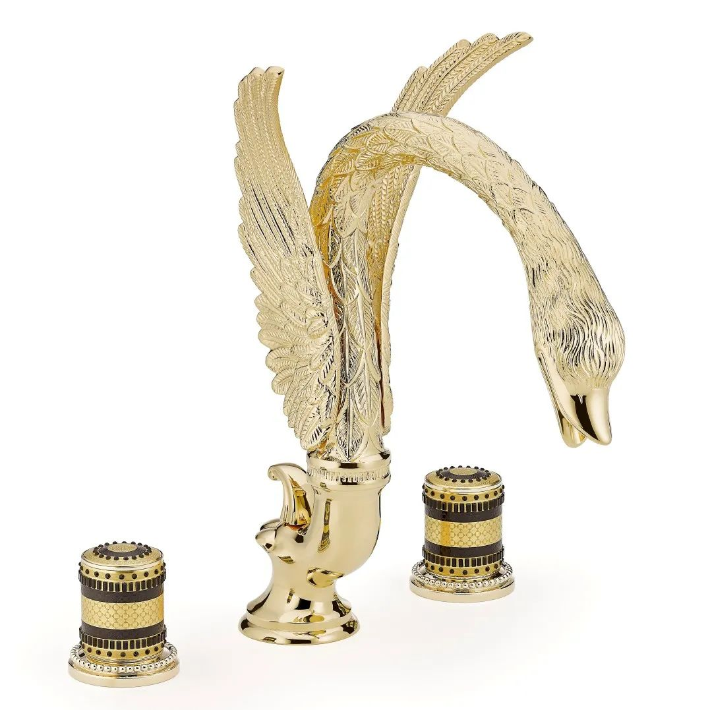
图：Cygne 金色天鹅全套——出水嘴做成昂首天鹅，把手为装饰瓶形。图源：建E网 THG 产品报道。
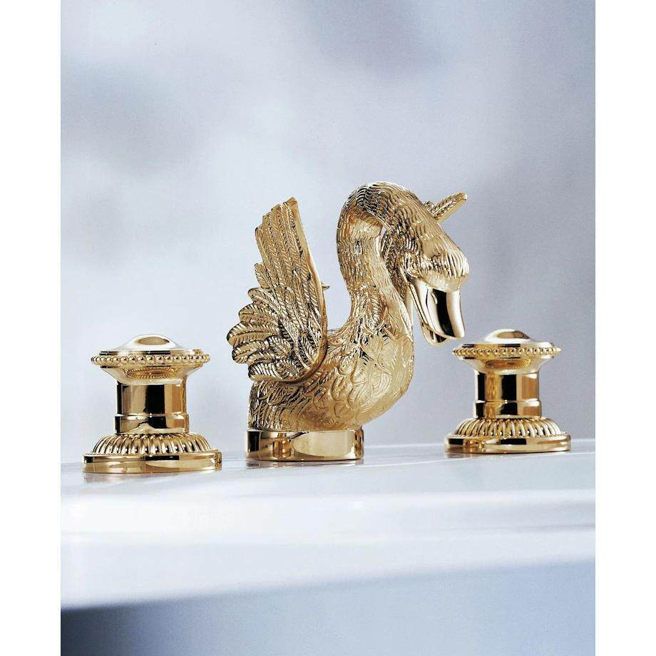
图：Cygne 金色三孔产品图——天鹅颈部与喙部出水孔是最复杂的铸造与机加工部位。图源：THG 经销商商品图。
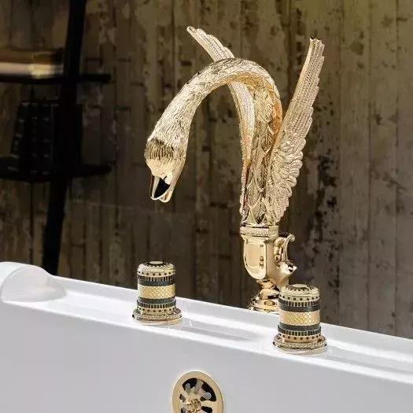
图：Cygne 在古典浴室中如同一组金属雕塑。图源：THG 产品图集。
Hirondelles（2000 年代起，Lalique × THG）
2001 年那张游艇订单让 THG 与水晶工坊 Lalique 走到一起，Hirondelles（法语"春燕"）正是这一合作的代表性产品。它的把手是一枚浮雕水晶，正反两面是相向展翅的两只春燕——这是 René Lalique 本人在 1920–1930 年代反复使用的母题。燕子在法语文化中是春天、归来与旅行的象征，也是 Lalique 银器与水晶上最知名的浮雕之一。
术语注释：cristal——在法国，水晶指含铅量达到规定比例、折射率与手感明显高于普通玻璃的晶质玻璃。
Hirondelles 的关键设计决定，是把"一块 Lalique 收藏品"变成"每天被拧动的把手"。浮雕水晶由 Lalique 工坊按自有档案制造，THG 负责把它固定在金属阀杆上，并完成黄铜阀体、饰面与装配；铬或金色的金属衬在水晶之下，使浮雕在透光时产生明暗层次。把手承重、密封与冷热循环由金属端保证，装饰与观赏完全交给水晶——这成为此后所有 THG 水晶联名的标准分工。
Hirondelles 之后，Lalique 与 THG 的合作持续二十余年，陆续推出 Métropolis、Ange、Naïade、Océania、Panthère、Bambou、Papillon、Masque de Femme、Mossi、Dahlia、Perle 等十几个系列。春燕款作为开篇之作，长期留在目录中，成为"水晶龙头"这一品类的标志性形象。
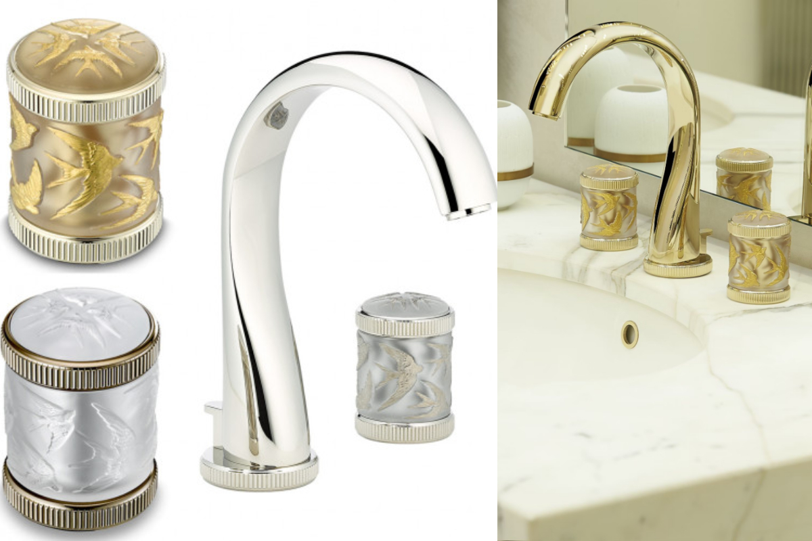
图：Hirondelles 春燕浮雕水晶把手——两只相向展翅的燕子是 René Lalique 经典母题。图源：Creative Home 品牌报道。
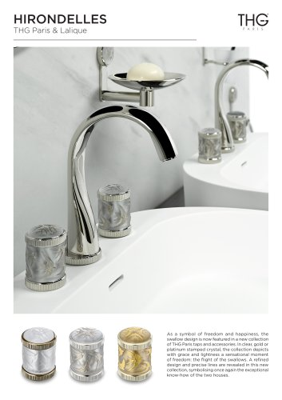
图：Hirondelles 官方目录页——水晶由 Lalique 工坊按档案制造，金属与装配由 THG 完成。图源：Archiexpo THG 官方目录。
Métropolis 与 Dahlia（2000 年代起，Lalique × THG）
Lalique 合作线最能说明 THG 的做法：它不只是在新龙头上定制新水晶，而是系统地"复活" Lalique 档案里的历史造型。Métropolis 复刻的是 1928 年的 Raisins Muscat（麝香葡萄）高浮雕——这串葡萄当年曾装饰于东方快车（Orient Express）的车厢，把手表面是累累下垂的葡萄串与叶片，部分版本还在水晶内置入光源，点亮时浮雕像一盏壁灯。
Dahlia 则走得更深：它把手的水晶直接复刻 René Lalique 1931 年为"Dahlia 水晶粉盒"（poudrier Dahlia）雕刻的大丽菊纹样。花瓣层层放射、饱满立体，把一件梳妆台上的收藏品完整移植到水龙头上。THG 官方合作画册把这两个系列与其他 Lalique 款放在一起，强调它们"来自 Lalique 博物馆档案"的出身。
术语注释：pâte de verre——脱蜡水晶（古法水晶铸造），把水晶料填入模具经高温熔融成型，可做出立体浮雕与色彩渐变。
这类产品的关键工艺是把历史浮雕模具或档案重新翻制成适合把手尺寸的水晶，再与金属阀杆配合。水晶表面需要与金属件保持精确的同轴度，否则旋转时会晃动；浮雕的缝隙也需要在日常使用中可清洁。它把博物馆式的复原工程与卫浴产品的耐用性要求结合在一起。
长期来看，Métropolis 与 Dahlia 确立了 THG 联名线的"档案方法"：每一只水晶把手都能追溯到某位设计师的具体年份原作，而不是泛泛的"水晶装饰"。这也是 THG 与普通水晶配件最本质的区别。
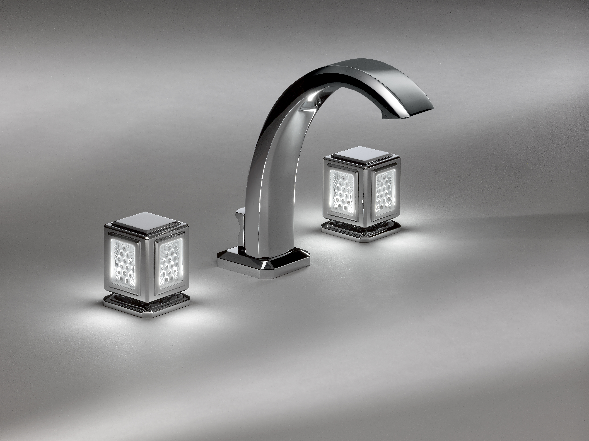
图：Métropolis 复刻 1928 年 Raisins Muscat 葡萄浮雕，该母题曾装饰于东方快车车厢。图源：THG Paris 官方 Lalique 合作博客。
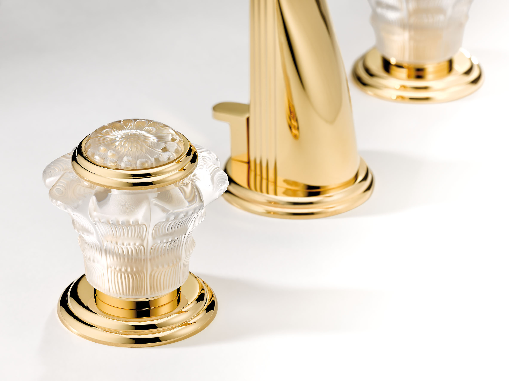
图：Dahlia 把手复刻 René Lalique 1931 年水晶粉盒的大丽菊纹样。图源：THG Paris 官方 Lalique 合作博客。
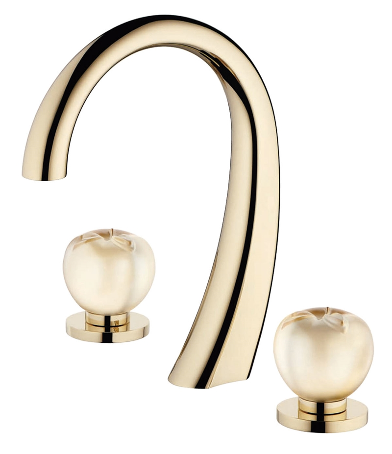
图：Dahlia 金色 Lalique 水晶三孔龙头——档案纹样与金属阀杆精确配合。图源：ARCH.tw 设计图库。
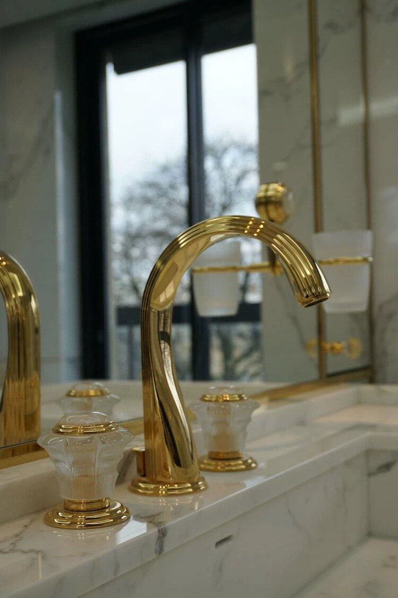
图：Dahlia 金色龙头在浴室中的实景——层层放射的花瓣是视觉焦点。图源：THG 经销商商品图。
Pétale de Cristal（2012，Baccarat × Pierre-Yves Rochon）
2012 年，THG 与另一家法国水晶名坊 Baccarat 开始合作，开门之作是 Pétale de Cristal（水晶花瓣），由豪华酒店设计大师 Pierre-Yves Rochon 设计。Rochon 与 THG 的合作始于 2005 年，他设计过巴黎四季 George V、Plaza Athénée 等宫殿酒店，对"水龙头如何融入大理石与水晶的浴室"有直接的工程经验。
Pétale 的把手是一枚透明水晶花瓣，花瓣表面以细金线（fine gold thread）勾勒脉络，像一片悬浮的花瓣落在金属基座上。它的关键设计决定是把 Baccarat 最擅长的"切割与透光线"做到最小尺度——Baccarat 以水晶吊灯与酒具闻名，其水晶依靠精确的棱面切割产生折射，把手相当于把吊灯的一个零件缩小到手可握住的尺寸。
术语注释：Baccarat——1764 年创立于法国洛林的水晶工坊，以水晶吊灯、酒具与棱面切割闻名。
Pétale de Cristal 是 THG×Baccarat 关系的第一块拼图，之后由 Rémi Tessier 设计了 Beyond Crystal，直到 2025 年才迎来第二个大系列 Mille Nuits。它在 2012 年的意义，是把 Lalique 时代被验证的"水晶把手+金属阀体"模式复制到 Baccarat 这一更强势的水晶品牌上，形成 THG 同时握有 Lalique 与 Baccarat 两条水晶线的格局。
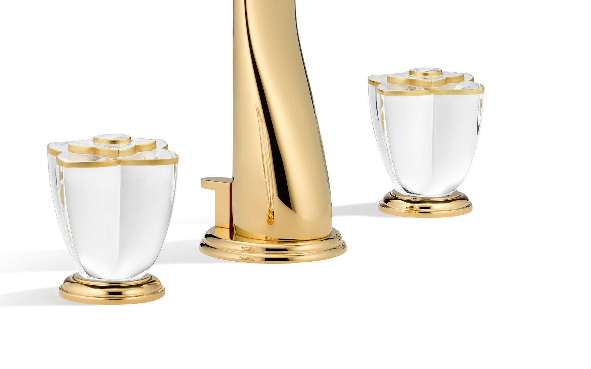
图：Pétale de Cristal（2012）——透明水晶花瓣以细金线勾勒脉络，是 THG×Baccarat 的开门系列。图源：THG Paris 官方产品页。
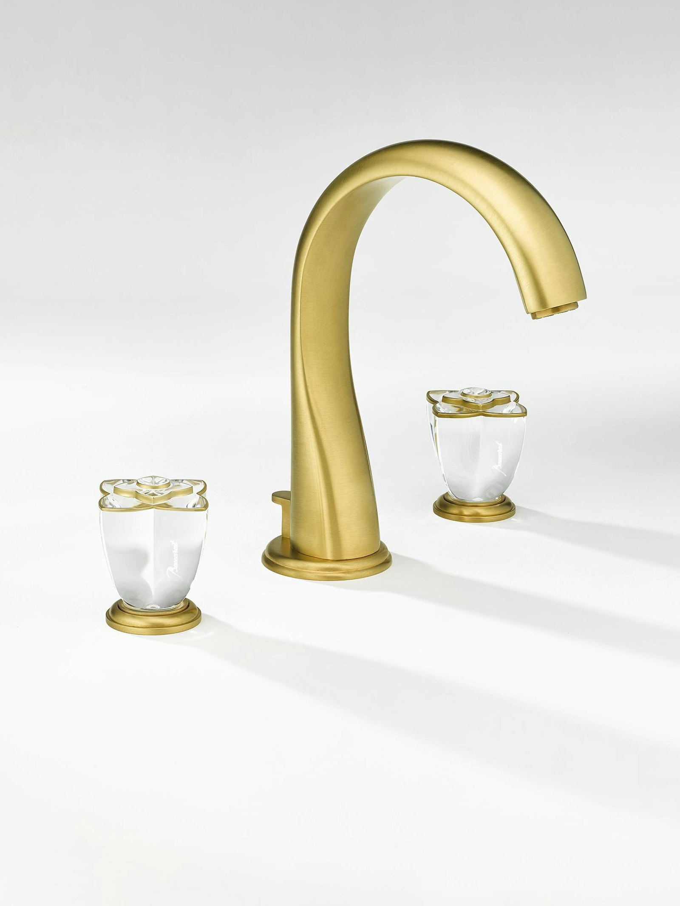
图：Pétale de Cristal 浴室场景——花瓣把手落在金属基座上。图源：THG Paris 官方产品页。
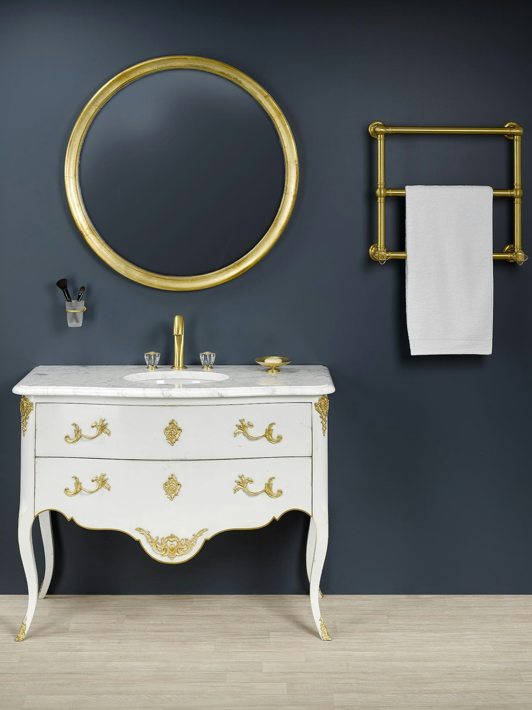
图：Pétale de Cristal 三孔龙头——把 Baccarat 的棱面切割做到手可握住的尺度。图源：THG Paris 官方产品页。
Rose（2009 年起，Daum × THG）
如果说 Lalique、Baccarat 走的是透明水晶与棱面切割，Daum 走的则是另一条路——以脱蜡水晶（pâte de cristal）与色彩见长。Rose 系列把一朵含苞的粉玫瑰做成把手：花瓣不是切割出来的，而是用脱蜡水晶熔融成型，花瓣边缘薄、花心厚，粉色在厚度变化中自然渐变，像一朵被凝固在金属上的真玫瑰。
Rose 的工艺难点在于脱蜡水晶本身：每一件都要把水晶料填入模具、经高温熔融，成品收缩率高、成品率低，几乎无法做到两件完全一致，这让它带有手工器物的唯一性。THG 负责把这朵玫瑰固定在金属阀杆上，金属基座与花瓣之间留出过渡结构，既承托住水晶，又让花瓣看起来像"长"在龙头上。
Rose 是 THG 联名线中价格最高的系列之一：2026 年 10 月 27 日美国授权经销商处，同档三孔面盆 Rose × Daum 组挂价约 7,627 美元，位于水晶款的顶端。它与同系列的兰花、鸢尾等植物母题一起，证明 THG 的联名对象不局限于切割水晶，而延伸到了雕塑性的有色水晶。
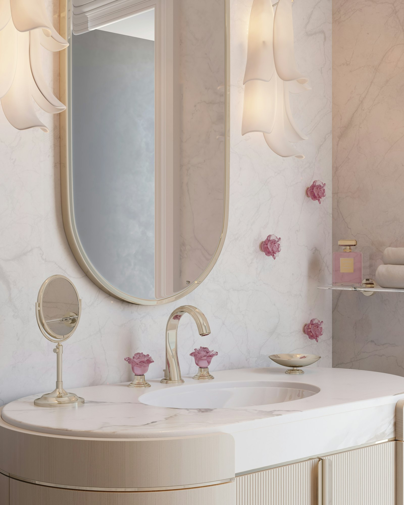
图：Rose × Daum 浴室场景——含苞粉玫瑰用脱蜡水晶熔融成型，色彩在厚度变化中渐变。图源：THG Paris 官方产品页。
图：Rose 把手特写——花瓣边缘薄、花心厚，脱蜡水晶让每件略有不同。图源：THG Paris 官方产品页。
图：Rose 三孔龙头——金属基座承托水晶花瓣，是 THG 价格最高的系列之一。图源：THG Paris 官方产品页。
Profil（2007，Jamie Drake）
2000 年代中期，THG 想打开美国私人豪宅市场，需要一个能与纽约设计师审美对话的当代系列。它把合作对象选给了纽约名人室内设计师 Jamie Drake——他以大胆用色与名流客户闻名，被官方称为"纽约风格偶像"。Profil 于 2007 年春季在芝加哥 KBIS（厨卫工业展）首发。
官方对 Profil 的定位很明确："让 Jamie Drake 设计一个既能被大多数人接受、又像 THG 一样保持精英高端的系列。"它的本体是压低装饰的现代流线型，视觉焦点全部交给把手——雕塑感的十字把手上嵌入独特的镶嵌件，可选 Lalique 透明水晶、Lalique 黑水晶或黑玛瑙（Black Onyx），也有全金属版。同一只本体，换一种镶嵌材料就换一种气质。
术语注释：KBIS——Kitchen & Bath Industry Show，美国厨卫工业展，北美高端卫浴新品的重要发布场合。
这一决定影响深远。Profil 是 THG 第一个"美国明星室内设计师署名系列"，它确立了此后十余年的合作模板：极简本体 + 可替换的奢华镶嵌把手 + 十字/单杆双版本。后来的 System、Grand Central、West Coast 等系列都沿用"同一骨架换镶嵌材料"的货架逻辑。它在 2007 年 KBIS 现场被美国设计博客选为当季最受喜欢的新品之一，并长期留在销售目录中。
图：Profil（2007）主视觉——压低装饰的流线本体，视觉焦点交给雕塑感把手。图源：THG Paris 官方产品页。
图：Profil 把手嵌 Lalique 黑水晶或黑玛瑙，同一只本体换镶嵌材料即换气质。图源：THG Paris 官方产品页。
图：Profil 产品渲染图——首个美国明星设计师署名系列，确立"极简本体+奢华镶嵌"模板。图源：THG Paris 官方产品页。
Le 11（约 2005–2010，Alberto Pinto）
2000 年代超级游艇与巴黎近郊豪宅工程爆发，摩洛哥出生、巴黎起家的装饰大师 Alberto Pinto（1943–2012）是这个圈层最抢手的设计师之一。官方产品页写道：THG 与 Alberto Pinto"注定相遇"——他们在豪华游艇与名宅的联合工程中反复碰面，乐于接受新挑战的 Pinto 主动提出为 THG 设计一整套龙头。
Le 11 是一只线条流动、几何精确的当代系列，最有记忆点的设计是出水方式：出水嘴不是圆管，而是一片"水刀片"（lame d'eau），水流从窄缝落下、在末端形成一个完美而和谐的直角。这个直角成了全系列最常被引用的画面，也让它能配现代游艇的金属与石材内饰。
术语注释：lame d'eau——水刀片，水从窄缝流出形成的薄片水幕，以落水时的直角或抛物线为造型点。
系列名 Le 11 取自 Pinto 事务所所在巴黎私人宅邸（hôtel particulier）的门牌号——把设计师的"地址"变成产品符号。这开创了 THG 后来的"门牌号命名"传统：Pierre-Yves Rochon 的系列随后被命名为 Le 9（取自其事务所 9 avenue Matignon）。Pinto 于 2012 年去世，系列确切投产年官方未标注，但以其去世为下限，系列在他生前已完成；此后 Le 11 仍以其署名继续销售。
图：Le 11 主视觉——线条流动、几何精确，为游艇与现代豪宅设计。图源：THG Paris 官方产品页。
图：Le 11 的水刀片出水——水流从窄缝落下形成直角。图源：THG Paris 官方产品页。
图：Le 11 十字把手段——系列名取自 Pinto 事务所门牌号。图源：THG Paris 官方产品页。
Poèmes（约 2009，Chantal Thomass × Bernardaud）
2000 年代后期，时尚品牌跨界家居成为巴黎话题。以内衣设计闻名的 Chantal Thomass 想要一个"像她本人"的浴室，她后来在《Maison à Part》2010 年的访谈中明确说："与大家想的相反，是我主动找上 THG 的。我在 Maison & Objet 展上看到一个产品很喜欢，立刻觉得与他们气味相投。我本来就是为女人的私密穿衣，而浴室正是私密的终极场所。"
Poèmes 是 THG 第一个真正意义上的时尚跨界系列（不是室内设计师、不是水晶世家，而是高级时装人）。她把内衣的视觉语言翻译到五金：蝴蝶结（nœuds）与拉扣（capitonné）成为母题，十字把手被塑造成女人纤细的腰肢，顶上加绗缝装饰；龙头用利摩日 Bernardaud 白瓷做成，配一条银色丝带；浴缸外壁用英文花体字写下"Glamour""Beautiful"等她钟爱的词。
术语注释：capitonné——拉扣/绗缝，把软垫用纽扣拉出凹陷的工艺，常见于内衣与闺房家具。
2010 年 1 月 21 日在巴黎奥斯曼大道 JCD Delépine 展厅的发布会上，她把整个橱窗改造成粉色拉扣闺房。她对媒体说："思路就是把我珍视的全部视觉符号搬进浴室；龙头上有蝴蝶结和拉扣，浴缸上用英文字体写我喜欢的词。"时任 THG 总经理 Michel Gosse 回应："Chantal Thomass 太懂女人了，只有她能造出一个让女人真正自在的世界。"首批配件大卖后，他顺势让她补出浴缸。Poèmes 如今已不在官方现行目录，属归档系列，但它第一次把"女性气质"这个卫浴行业此前回避的主题正式写进了产品。
图：Poèmes 浴室全景——白瓷龙头配银色丝带，蝴蝶结与拉扣成为母题。图源：《Maison à Part》2010 年报道。
图：Poèmes 铬色三孔面盆龙头——十字把手被塑造成女人纤细的腰肢。图源：《Maison à Part》2010 年报道。
图：Poèmes Bernardaud 白瓷配件细节——蝴蝶结与拉扣是直接引用的内衣符号。图源：《Maison à Part》2010 年报道。
图：Poèmes 浴缸外壁以英文花体字写下"Glamour""Beautiful"等词。图源：《Maison à Part》2010 年报道。
Les Ondes（约 2019–2020，Gilles & Boissier）
2010 年代末，"法式松弛感"主导高端室内，Gilles & Boissier 事务所（Patrick Gilles 与 Dorothée Boissier）是这一风格在巴黎的代表组合。官方博客称，Les Ondes（法语"波纹"）灵感来自 Patrick Gilles 为 Baccarat 设计的 Aurore 灯——一款切面水晶灯，系列由此诞生。
它的两个关键造型都与水有关。底座是一个十面体（décaèdre），十个切面呼应水晶的切割面，让金属底座本身呈现晶体的折光；十字把手做成一柄三叉戟（trident），官方明确说它"让人想起海神尼普顿（波塞冬）的法器"。金属件做晶体、把手做海神法器，整件龙头把"水"的神话与几何同时编码在造型里。
术语注释：décaèdre——十面体，Les Ondes 用以呼应水晶切面的多面体底座。
Les Ondes 介于当代与过渡风格之间，被官方定位为"一种法式优雅的答案"。它是 THG"跨界回收自家生态"的典型：用同一位设计师为另一个法国水晶世家做的灯，反哺到自己的龙头上，说明 THG 已进入巴黎奢侈品设计圈的共享符号库。浴室版约 2019–2020 年进入目录，2022 年又推出工业感厨房版。
图：Les Ondes 十面体底座与三叉戟把手——金属件做晶体，把手做海神法器。图源：THG Paris 官方产品页。
图：Les Ondes 把手特写——三叉戟呼应海神尼普顿的法器。图源：THG Paris 官方产品页。
图：Les Ondes 产品渲染图——灵感来自设计师为 Baccarat 设计的 Aurore 灯。图源：THG Paris 官方产品页。
Mille Nuits（2025，Baccarat × Mathias）
2025 年 4 月 8 日，THG 与 Baccarat 在米兰设计周（Brera 区）首发 Mille Nuits（法语"一千零一夜"）龙头系列，设计师是署名"Mathias"的自学成才设计师。Mathias 早在 1999 年就为 Baccarat 创作了第一盏 Mille Nuits 吊灯，以竖向棱纹（côtes vénitiennes，威尼斯棱纹）与圆润丰盈的造型著称，Baccarat 官方称他为"诗人设计师"。
THG 把这盏吊灯的语言移植到水龙头：把手与装饰柱做成竖向棱纹的水晶杯形，水晶提供 Clear（透明）、Brume（雾色）、Champagne（香槟色）三种颜色，金属底座仍走 THG 的约 30 种饰面。这是 2012 年 Pétale de Cristal 之后 THG×Baccarat 推出的第二个大系列，也是第一次把 Baccarat 的明星零售母题完整做成卫浴线。
术语注释：côtes vénitiennes——威尼斯棱纹，水晶表面竖向的细密棱条，是 Baccarat Mille Nuits 系列的标志性切割。
Mille Nuits 的意义在于把"THG×Baccarat"从工程向的 Pétale 升级为面向零售的明星联名，与 Lalique 线并列形成双水晶战略。一个 1999 年的吊灯母题，在灯具、餐具之后被第三次移植到卫浴，26 年间跨越三类产品，是法国奢侈品"母题复用"方法的典型样本。它在米兰首发后进入 2026 年官方主推目录。
图：Mille Nuits（2025）主视觉——竖向棱纹水晶把手，设计师 Mathias 1999 年为 Baccarat 创作的吊灯母题。图源：THG Paris 官方 Mille Nuits 页。
图：Mille Nuits 产品静物——水晶提供透明、雾色、香槟三色，金属底座可换约 30 种饰面。图源：THG Paris 官方 Mille Nuits 页。
图：Mille Nuits 浴室场景——2025 年 4 月米兰设计周首发，是 THG×Baccarat 的第二个大系列。图源：THG Paris 官方 Mille Nuits 页。
08 Aesthetics 美学：法兰西古典、水晶与黄金的光
法式古典的谱系：从巴洛克到装饰艺术
THG 的美学不是单一风格，而是一整套法国古典装饰谱系。Prestige 古典线覆盖了从 17 世纪巴洛克、路易十五洛可可到 1920–1930 年代装饰艺术的连续母题：天鹅、贝壳、卷草、阶梯、扇形、放射纹、古典柱头，都是法国宫廷建筑与银器上的常见词汇。设计师 Delépine 做的事，是把这些原本属于宫殿立面、水晶吊灯与银质餐具的装饰语言，按比例缩小到水龙头这一尺度。
与 Christofle 合作的 Malmaison 是这条谱系里偏巴洛克的一支：金属表面做繁复雕刻与古典纹样，名字取自马尔梅松城堡（拿破仑与约瑟芬的居所），整体厚重、对称、贵气；而 Art Déco 系列则走向相反的几何化。两者并置，正好勾勒出 THG 古典美学的两端——卷曲与直线、繁复与克制。
术语注释：Baroque——巴洛克，17 世纪起源于意大利、盛行于法国宫廷的繁复、动态、戏剧性装饰风格。
图：Malmaison（2003，与 Christofle 合作）——金属表面的巴洛克雕刻与古典纹样，厚重而对称。图源：THG Paris 官方产品页。
图：Malmaison 在古典浴室中的整体效果——把银器名坊的雕刻语言移植到龙头。图源：THG Paris 官方产品页。
水晶的光与触感
水晶是 THG 美学中最具辨识度的部分。法国水晶（cristal）依靠含铅量带来的高折射率，在光线穿过时产生锐利的棱面反光和沉甸甸的手感；Lalique 的磨砂浮雕与 Baccarat 的明亮切割，代表了两种不同的水晶审美——前者偏哑光、雕塑、新艺术运动的曲线，后者偏透亮、棱面、几何。THG 把二者都纳入目录，使一只水晶把手既能是温润的浮雕，也能是耀眼的切面。
术语注释：新艺术运动（Art Nouveau）——19 世纪末 20 世纪初以自然曲线、藤蔓与女性形象为特征的装饰风格，是 René Lalique 的创作背景。
水晶在手上的体验是这类产品的关键：它比金属凉、比玻璃沉，转动时棱面在指下有明确的凹凸感。这也是为什么 THG 坚持把水晶用在"每天被拧动的把手"而非纯摆件上——只有被反复触摸，材料的触感差异才能成立。
图：Vogue 系列把半宝石镶嵌进透明水晶把手——水晶的透光与宝石的色彩叠加。图源：THG Paris 官方产品页。
半宝石与珠宝式镶嵌
Vogue、Trocadéro、Cheverny 等系列把珠宝镶嵌逻辑直接搬进卫浴。把手在透明水晶或实心黄铜框中嵌入天然青金石（Lapis Lazuli）、孔雀石（Malachite）、玫瑰石英、紫水晶、红玉髓、虎眼石、黑玛瑙或白水晶。天然石材每一件纹理不同，意味着没有两只镶嵌把手完全一样，这与高级珠宝的"唯一性"逻辑一致。
这类镶嵌在视觉上让龙头成为台面上的首饰：青金的深蓝、孔雀石的翠绿条带在铬或金色金属的衬托下饱和度极高，是 THG 装饰语汇中最"珠宝化"的一支，也是 Cheverny 孔雀石款能把一只三孔面盆组推到约 9,477 美元的直接原因。
图：Vogue 青金石把手——天然石材纹理每只不同，宝石在金属衬托下饱和度极高。图源：THG Paris 官方产品页。
图：Vogue 把手镶嵌结构——宝石嵌于透明水晶或实心黄铜框中，珠宝式镶嵌是其核心工艺。图源：THG Paris 官方产品页。
瓷、银与机刻雕花
除了水晶与宝石，THG 的美学光谱还包括另外两类材料。其一是瓷器与白瓷金饰：与利摩日瓷坊 Bernardaud 合作的 Marquise Gold décor 复刻 18–19 世纪法式宫廷纹样，白瓷的温润、哑光与金色描边带来一种不同于水晶的、近乎瓷器茶具的触感；Poèmes 则把白瓷用于内衣语汇。其二是金属表面的机刻雕花（guilloché）：West Coast Metal 系列用源自制表业的精密机械雕刻，在金属嵌件上刻出重复的放射纹或巴黎钉纹，呈现出一种冷静的、工业化的奢华。
术语注释：guilloché——机刻雕花，用精密机械在金属表面刻出连续重复纹样的工艺，常见于高级腕表表盘。
术语注释：利摩日（Limoges）——法国中部城市，以高岭土白瓷闻名，是法国瓷都。
图：Marquise Gold décor（Bernardaud 合作）——利摩日白瓷配金色描边，复刻 18–19 世纪宫廷纹样。图源：THG Paris 官方产品页。
图：West Coast Metal——金属嵌件上的制表式机刻雕花，呈现冷静而工业化的奢华。图源：THG Paris 官方产品页。
09 Design 设计：一间工厂里的高定
设计：内部工作室与外部设计师
THG 的设计体系是"内部工作室 + 外部设计网络"的双轨结构。在与 Delépine、Lalique、Baccarat、Pinto、Drake 等外部合作者合作多年后，品牌设立了内部 Studio THG Paris，自行设计 Beaubourg、Charleston 等系列，平衡"永恒"与"优雅"。外部设计师则通过官方 Designers 索引统一管理，2026 年的公开名单约 18 位（含机构），从 Delépine、Wilmotte、Studio Putman、Gilles & Boissier、Arik Levy、Champalimaud、Charles Zana 到 Studio F. A. Porsche。
外部合作的流程通常是：设计师先决定把手、出水嘴与整体比例的"造型语言"，THG 内部的研究与设计办公室再把造型翻译为可铸造、可机加工、可通过水路与密封测试的工程图纸，最后交给同一座工厂制造。设计师负责审美，工厂负责让审美能够被批量、稳定地造出来。
图：THG 内部设计办公室——设计师造型在此被翻译为可铸造、可机加工的工程图纸。图源：THG Paris 官方工艺页。
铸造、机加工与一体化厂区
THG 官方称自己"掌控每一道工序"（Maîtriser chaque étape）。Béthencourt-sur-Mer 约 2 万平方米的厂区把设计办公室、机加工、抛光、表面处理、装配与质检全部集中在同一座厂址内。龙头本体为黄铜（laiton），经精密机加工成型；复杂造型的天鹅颈、桥接式横梁与装饰件先经砂模铸造得到坯体，再转入 CNC 机加工理顺孔位与同轴度。
术语注释：laiton——法语，黄铜，铜锌合金，是高端龙头本体的主流材料，易切削、耐腐蚀、镀层附着好。
一体化厂区带来的直接好处是反馈半径短：抛光师发现某件铸件的曲面在镀层后会显瑕疵，可以当场退回铸造或机加工工位调整；水晶或瓷件的配合公差出现问题，也能在同一厂区内修配。这是 THG 承接单件定制（sur-mesure）的工程基础。
图：THG 工厂机加工车间——黄铜本体在此精密切削。图源：THG Paris 官方工艺页。
图：工厂内的装配与质检工位——铸造、机加工、抛光、装配在同一厂区完成。图源：THG Paris 官方工艺页。
抛光与表面处理：电镀、PVD 与镀金
THG 的饰面约有 30 种，是其"高定"宽度最直观的体现。抛光以手工为主，拉丝纹理由工人逐件刷出，官方表述为"手工抛光与表面处理赋予每一种饰面以深度、光泽与持久性"。表面处理分两条路线：湿镀（电镀）把黄铜件依次浸入电解槽，铬在光亮镍底层上沉积，镀金（dorure 24 carats）则在镍底层上沉积近纯金；干镀（PVD）在真空炉内以等离子体沉积金属离子，THG 借用制表业的做法，在镀层中加入钛（Titane）与锆（Zirconium）以提高硬度，并通过氮（金色）或甲烷（黑色）调出镍色、石墨、褐灰等色。
术语注释：PVD——物理气相沉积，真空炉内把金属离子镀到工件表面的硬质彩色镀层，硬度高、耐磨。
术语注释：dorure 24 carats——24K 镀金，在镍底层上电解沉积近纯金的饰面。
此外还有做旧（patine/oxydée）饰面：氧化青铜（FA2）、氧化锡（FA4）、古银（vieil argent，外加清漆封层），用人工氧化做出复古的时间感。具体抛光道数与镀金微米厚度官方未公开，属待核实项。
图：工匠手持黄铜花洒弯管手工抛光——拉丝纹理由工人逐件完成。图源：THG Paris 官方工艺页。
图：电镀车间——黄铜件依次浸入电解槽，铬或金在镍底层上沉积。图源：THG Paris 官方品牌页。
图：约 30 种饰面的色板——从铬、镍、镀金到 PVD 深色与氧化做旧。图源：THG Paris 官方饰面页。
装配、测试与单件质检
每一只龙头在出厂前都要经过单件装配、调校与测试。官方明确："每件产品在发货前都被单独装配、调整并测试。"水晶、瓷、宝石等外购装饰件由对应名坊供货，THG 负责把它们固定到金属阀杆上并完成密封；水晶把手与阀体的具体固定/密封结构（螺纹、胶粘或 O-ring）官方未公开，属待核实项。标品（Stock Program）在 10 个工作日内发货；超过 15 件的项目订单与定制款则需联系商务，周期另议。
图：金属嵌件上的机刻雕花细节——每只装饰件在装配前都需通过尺寸与表面检查。图源：THG Paris 官方饰面页。
10 Experience 体验：展厅、宫殿浴室与定制流程
展厅与高定选购
THG 不在线上直接成交高定产品，体验的核心入口是全球展厅与设计师渠道。四座直营展厅分别位于巴黎奥斯曼大道 152 号（152 bd Haussmann, 75008）、伦敦 Design Centre Chelsea Harbour、米兰 Brera 区 Via Fiori Chiari 5 与纽约 D&D 大楼 1206 室；另有劳德代尔堡、莫斯科、上海（闵行）、法兰克福、迪拜设计区、新加坡等地的子公司或办公室，进入 60 多个国家。
术语注释：sur-mesure——法语，"量身定制"，针对唯一项目的图纸与饰面单独制造。
高定选购的典型路径是：设计师带业主到展厅，在数百个系列与数十种饰面、镶嵌材料中挑选并组合，项目部门据此报价、出图并安排定制；官方强调其工作方法建立在"倾听、适应与个性化"之上。对游艇与酒店项目，还可改尺寸、改饰面、改用耐盐雾的镀层，因此终端使用者几乎不直接面对品牌，而是由设计师或船厂完成全部沟通。
图：THG 精品店内景——饰面与系列按设计师选样的方式陈列，而非普通建材零售陈列。图源：THG Paris 官方展厅资料。
宫殿浴室样板：Hôtel de Crillon
最能说明 THG 体验价值的，是宫殿级酒店的样板间。巴黎 Hôtel de Crillon（瑰丽酒店）翻新时，由 Andrée Putman 的 Studio Putman 与银器名坊 Christofle 合作设计 Collection O，用于玛丽·安托瓦内特套房（Marie-Antoinette）等空间。THG 官方合同册明确标注了这一项目与署名。套房把浴室当作与客厅同等重要的空间处理，龙头、配件与银器、石材统一在 Putman 的黑白几何语汇里。
这种"设计师 × 名坊 × 酒店"的样板间具有强外溢效应：它既是 THG 最高规格的展示，也是同一设计师此后承接豪宅、游艇项目时的现成范本。
图：Hôtel de Crillon 玛丽·安托瓦内特套房——Collection O by Studio Putman × Christofle。图源：THG Paris 官方 Collection O 博客。
图：Crillon 套房浴室——浴室被当作与客厅同等重要的空间。图源：THG Paris 官方 Collection O 博客。
图：Crillon 套房化妆间——龙头、配件与银器、石材统一在 Putman 的几何语汇中。图源：THG Paris 官方 Collection O 博客。
图：Collection O 系列浴室场景——黑白几何与银器饰面是其识别点。图源：THG Paris 官方 Collection O 博客。
更多酒店与游艇
除 Crillon 外，THG 官方合同册的参考客户还列有巴黎 Plaza Athénée、Shangri-La Paris、The Dorchester、纽约 1010 Park Avenue、迪拜 Grand Hyatt 等。需要区分的是：Four Seasons George V 出现在官方名录与 Spa 项目中，但 2025 年酒店官方新闻稿显示其翻新套房已改用 Baccarat 水晶龙头，因此不能笼统地把全部 George V 浴室都归为 THG；Ritz Paris、Le Meurice、半岛巴黎等未获官方证实，不纳入。游艇方面，Orient Express Corinthian 远洋帆船是较新的具名案例，THG 龙头作为"房间珠宝"出现在客房。
图：巴黎香格里拉酒店套房——列于 THG 官方工程合同册参考客户名录。图源：Outoria 巴黎香格里拉专题。
图：巴黎 Plaza Athénée 埃菲尔套房——THG 官方合同册列名的宫殿酒店项目。图源：THG Paris 官方合同册（Contract）。
图：Orient Express Corinthian 远洋帆船——THG 龙头作为"房间珠宝"进入游艇客房，饰面按耐盐雾要求定制。图源：Tatler Asia 报道。
11 Competition 竞品：欧洲四国的高端龙头阵营
四个国家的四种高端逻辑
装饰性高端龙头是一个以欧洲为主、美国承接的市场，不同国家的品牌呈现出清晰可辨的路线。意大利品牌以设计潮流与生活方式见长，代表 Gessi（1992 年创立于皮埃蒙特 Serravalle Sesia，Altagamma 奢侈品协会成员），以私享水疗（Private Wellness）、编织金属纹理与 Casa Gessi 展厅做时尚化表达。德国品牌偏技术与精密，代表 Dornbracht（1950 年创立于 Iserlohn，家族第三代，Tara 系列改写 1990 年代设计史，手工占比高）和汉斯格雅旗下的 AXOR（1993 年起与 Starck、Citterio 等设计师联名，FinishPlus 提供约 15 种 PVD 饰面）。英国品牌偏古典五金与建筑五金传统，代表 1820 年创立的伯明翰 Samuel Heath、Perrin & Rowe 与历史主义复刻品牌 Lefroy Brooks。美国品牌偏渠道与零售，代表 RH 集团旗下的 Waterworks。法国本土则有 Volevatch、Herbeau 等手工艺术层同行。
THG 在这一阵营里的差异点是：法国本土一体制造 + 水晶/瓷器/半宝石名坊联名 + 约 30 种饰面与单件定制的宽度，以及宫殿级酒店的工程履历。它的阀芯、恒温等技术是行业共享基础，真正的护城河在装饰与工艺的纵深。
图：System（Arik Levy 设计）——THG 在当代设计线的代表，与意、德设计师品牌正面竞争。图源：THG Paris 官方产品页。
图：System 模块化把手——"水龙头即珠宝"的模块化几何，是 THG 当代设计语言的样本。图源：THG Paris 官方产品页。
主要竞品对照
| 品牌 | 国家/创立 | 归属 | 核心差异 | 价格带（面盆组） |
|---|---|---|---|---|
| Gessi | 意大利，1992 | 家族（Altagamma） | 私享水疗、编织金属、时尚化展厅 | 设计溢价层 |
| Dornbracht | 德国 Iserlohn，1950 | 家族第三代 | 设计派精密、手工占比高、Tara | 与 THG 同层 |
| AXOR | 德国 Schiltach，1993 | Hansgrohe | 设计师联名、FinishPlus PVD、Select | £1,000–5,000+ |
| Waterworks | 美国，1976 | RH 集团（2016 收购） | 美式高端零售渠道，设计联名 | 与 THG 同档 |
| Perrin & Rowe | 英国，1980s | House of Rohl | 英国传统手工黄铜、Triflow | 中高，低于 THG |
| Samuel Heath | 英国伯明翰，1820 | 独立家族 | 两百年建筑五金+卫浴 | 中高 |
| Lefroy Brooks | 英国（设计） | LBIP 持有 | 1900/1920/1930 历史主义复刻 | 高 |
| Thomas Crapper | 英国 | 独立 | 维多利亚老牌、镀铬经典 | £449–3,119 |
| Volevatch | 法国巴黎 | 独立 | 手工艺术龙头、单件定制 | 艺术摆件级 |
制造端与渠道端的重叠：Waterworks
一个值得注意的关系是：美国高端卫浴品牌 Waterworks 的龙头，业内独立测评称其绝大多数由 THG 在法国皮卡第的工厂代工。Waterworks 由 Sallick 家族 1976 年创立于康涅狄格州，2016 年被 RH（Restoration Hardware）以约 1.17 亿美元收购；THG 自 1998 年起即是其美国渠道的合作方。如果这一关系成立，THG 与 Waterworks 并非纯粹的竞争对手，而是"法国制造 × 美国设计零售"的代工与品牌关系——THG 同时握有制造端与自有品牌端，在大西洋两岸以不同面目出现。该代工关系目前来自业内二手测评，尚待 Waterworks 或 THG 官方确认，因此列为待核实项。
在装饰性这一维度，THG 真正缺少完全对标的对手：Gessi 与 Dornbracht 更偏现代设计，没有系统性的水晶名坊联名；英、美品牌有古典五金传统，但不掌握法国水晶/瓷器工坊生态。这是它的壁垒，也是它对联名节奏高度依赖的风险所在。
图：West Coast Metal 整机——金属表面工艺是 THG 与英、德品牌在高端层正面竞争的落点。图源：THG Paris 官方产品页。
图：Malmaison 整机——与 Christofle 联名的金属雕刻款，代表 THG 独有、竞品难以复制的名坊联名生态。图源：THG Paris 官方产品页。
12 Strategy 战略：从家族工坊到九牧时代
从家族到集团
THG 的战略经历了三次重心转移。1950–1970 年代是制造立身阶段，靠黄铜件质量与本地供应链站稳；1970 年代 Delépine 合作后转向奢华，1987 年 Laurence Tétard 与 Michel Gosse 接班后明确聚焦高端与出口，1997 年设美国公司、1998 年与 Waterworks 合作，2003 年更名 THG Paris 并逐次铺设德国、中国、迪拜、新加坡、意大利子公司，出口占比升至约 85%。2021 年，中国九牧集团（JOMOO）在同一年收购 THG Paris 与德国橱柜品牌 Poggenpohl，把它纳入奢侈品矩阵；2022 年起由在工厂工作约三十年、曾任生产负责人的 David Bonnelle 任董事长兼 CEO。
九牧入主后，THG 的制造、设计团队与品牌均留在法国原厂，EPV 与 Origine France Garantie 标签也未改变——这是一种"保留法式稀缺资产、注入集团资本与渠道"的整合路径。九牧的具体收购金额与持股比例未公开，属待核实项。
技术与新材料：ICON-X
当代线的战略重点是把"古典工坊"身份延伸到技术与设计前沿。2021 年与 Studio F. A. Porsche 合作的 ICON-X 是标志：它引入无接触电子件、激光装饰，以及碳纤维、钛合金等此前用于航空与腕表的新材料，并在 2021 年获得红点产品设计奖（Red Dot Award: Product Design 2021）。这是 THG 目前唯一获官方确认的国际设计奖项。
术语注释：Studio F. A. Porsche——保时捷设计工作室，以工业设计与精密制造语言见长的独立设计机构。
ICON-X 的意义在于证明 THG 不只会做水晶与镀金的古典款，也能与德国设计工作室、电子元件与新型材料协作，覆盖极简与科技感空间。它是品牌"古典+当代"双轨中当代一极的形象锚点。
图：ICON-X（2021，Studio F. A. Porsche）——引入无接触电子件与碳纤维、钛合金等新材料，获 2021 红点产品设计奖。图源：THG Paris 官方 ICON-X 目录。
图：ICON-X 在现代浴室中的整体效果——把工坊品牌延伸到极简与科技感空间。图源：THG Paris 官方 ICON-X 目录。
联名生态与"面向 2035"
在渠道与产品之外，THG 最深的战略资产是法国奢侈品工坊的联名网络：Lalique、Baccarat、Daum、Bernardaud、Christofle、Haviland 各自在水晶、脱蜡水晶、瓷器、银器领域拥有百年品牌与档案，THG 以"金属阀体 + 制造整合者"的身份把它们的母题做成可使用的卫浴件。这套生态难以被单纯的五金厂复制。2026 年，品牌在迎来七十周年的同时宣布"Cap sur 2035"（面向 2035）的工厂扩建计划，并继续以每年数个设计师系列（Marcel、Estrela、Hamptons、Zoom、Montaigne 等）扩张目录。其核心命题始终是：如何在集团化、全球化与电子化的同时，保住"法国高定工坊"这一稀缺身份。
13 视频与访谈资料
官方影片与访谈入口
以下影片与访谈资料可用于进一步了解 THG 的工艺、设计与发布现场。
- ICON-X 红点产品设计奖官方页（2021）：Studio F. A. Porsche 合作系列的设计说明与影像资料，见 THG Paris 官方红点页。
- ICON-X 官方目录与影片：含无接触电子件与新材料演示，见 ICON-X 官方目录 PDF。
- THG × Lalique 合作二十周年官方博客：含 Lalique 浮雕水晶的历史影像与工艺短片，见 官方合作博客。
- Mille Nuits 米兰首发（2025）：Baccarat × Mathias 系列在米兰设计周 Brera 的发布影像，见 Mille Nuits 官方页。
- Chantal Thomass 谈 Poèmes（2010）：含设计师本人访谈与发布会照片，见 《Maison à Part》报道。
- Michel Gosse 访谈：前掌门人谈宫殿酒店与翻新项目，见 THG 官方博客。
- Montaigne 系列设计师 Stéphanie Coutas 视频：谈原生黄铜与大理石的材料理念，见 官方视频。
图：ICON-X 产品视觉——该系列的官方影片展示了无接触电子件与新材料的结合。图源：THG Paris 官方 ICON-X 目录。
14 来源与延伸阅读
官方渠道
- 品牌官方网站（About / 历史时间线）：https://www.thg-paris.com/france/en/company/about
- 官方工艺与 savoir-faire：https://www.thg-paris.com/france/fr/entreprise/savoir-faire
- 官方饰面技术：https://www.thg-paris.com/international/en/thg-paris-finishes/finishing-techniques
- 官方设计师索引：https://www.thg-paris.com/us/en/designers
- 官方定制（sur-mesure）：https://www.thg-paris.com/international/fr/projets/sur-mesure
- 官方联系方式与展厅地址：https://www.thg-paris.com/international/fr/contact
- 官方 Prestige 画册（PDF）：https://www.thg-paris.com/content/file-library/680f69c7-ed30-4eaa-8cb2-4834076a8d8c/THG-Prestige.pdf
- Miroirs 2024 画册（PDF，含全球网络数据）：https://www.thg-paris.com/content/file-library/985a0bab-b2f5-4199-ae9c-ecba66a94e5a/Brochure-Miroirs-2024.pdf
- Lalique 合作目录（PDF）：https://www.thg-paris.com/content/file-library/203018dc-5dd0-4398-b03d-f7d4a5d835d3/CATALOGUE-LALIQUE_LOW.pdf
- Daum 合作目录（PDF）：https://www.thg-paris.com/content/file-library/c669871e-f49f-46cb-8671-9a63af34b7b9/Catalogue-DAUM_low.pdf
- Mille Nuits 目录（PDF）：https://www.thg-paris.com/content/file-library/4212e65e-5835-4c5c-a95c-f57d9c80b699/Catalogue_MilleNuits_Low.pdf
- 工程合同册 Contract（PDF，2026）：https://www.thg-paris.com/content/file-library/5df9442f-fda6-4b4c-9f1e-c0e853f89f82/Catalogue_CONTRACT-FR_2026.pdf
- 标品快交计划 Stock Program（PDF）：https://www.thg-paris.com/content/file-library/e3f70f1f-fec3-47fb-8587-d716bbedf365/StockProgram_THGParis.pdf
- 游艇定制目录 Yachting（PDF）：https://www.thg-paris.com/content/file-library/2344d95b-95d8-42b1-97cb-33e400a9953f/CTLG_Yachting_2017.pdf
- 技术规格书（PDF，含饰面代码）：https://www.thg-paris.com/content/file-library/d5e82eca-ee74-4ded-9b34-05ca13fde16b/CAHIER-TECHNIQUE-SANITAIRE_Low.pdf
- 红点奖官方页（ICON-X）：https://www.thg-paris.com/us/en/studio-f-a-porsche/red-dot-design-award
- 九牧集团（JOMOO）关于 2021 年收购 THG 与 Poggenpohl 的表述：https://www.jomoo.co.id/en/about-us/who-we-are
第三方与媒体
- 《Maison à Part》Chantal Thomass × Poèmes 访谈（2010）：https://www.maisonapart.com/edito/amenager-decorer/salle-de-bains/chantal-thomass----habillez-votre-salle-de-bains-d-3765.php
- Tatler Asia，Orient Express Corinthian 游艇"房间珠宝"：https://www.tatlerasia.com/homes/architecture-design/room-jewellery-thg-paris-th
- Réseau Excellence，THG Paris 机构页：https://www.reseauexcellence.fr/en/organizations/thg-paris/
- Design Centre Chelsea Harbour，THG 伦敦展厅：https://www.dcch.co.uk/showrooms/thg-paris/
- StarCraft Custom Builders，Waterworks 与 Lefroy Brooks 独立测评（含代工关系说法）：https://www.starcraftcustombuilders.com/sources.faucets.Waterworks.htm
- 法国 INSEE 建筑卫浴五金生产者价格指数：https://www.insee.fr/fr/statistiques/serie/010763943
- Four Seasons 官方新闻稿（2025 翻新套房，George V 卫浴品牌说明）：https://press.fourseasons.com/fr/paris/hotel-news/2025/renovated-rooms-and-suites-2/
15 分析附录
证据登记表（关键事实）
| 关键事实 | 置信度 | 主要来源 |
|---|---|---|
| 1950 年三人创立 La Robinetterie de la Poste，1956 年定名 THG，THG 为三姓氏首字母 | 官方一手 | 官网 About 时间线 |
| 唯一工厂在 Béthencourt-sur-Mer（索姆省，Hauts-de-France），从未外迁 | 官方一手 | 官网 About / 各画册 |
| 1970 年代 Delépine 合作转向奢华，1995 年收购 JCD Créations | 官方一手 | 官网 About 时间线 |
| 2012 年获 EPV 标签；持 Origine France Garantie | 官方一手（OFG 为二手） | 官网工艺页 / Paris Déco Home |
| Lalique 合作始于 2001 年（官方"20 周年"稿另有 2000 口径） | 官方一手 | Lalique 官方目录 PDF |
| Baccarat 合作始于 2012 年，Pétale de Cristal 由 Rochon 设计 | 官方一手 | 官网时间线 / Mille Nuits 目录 |
| 2021 年九牧（JOMOO）控股，2022 年 David Bonnelle 任 CEO | 官方一手 | 官网时间线 / 九牧官网 |
| 约 200 系列、约 30 饰面、约 300 员工、8 家子公司、60+ 国家、出口约 85% | 官方一手 | 官网 About / Miroirs 画册 |
| ICON-X 获 2021 红点产品设计奖 | 官方一手 | 官网红点页 |
| Hôtel de Crillon 用 Collection O（Putman × Christofle） | 官方一手 | 官方合同册 / 博客 |
| 价格 1,299–9,477 美元（2026-10-27 美国经销商三孔面盆组） | 二手实查 | bltfix / hardwarekix / knobandtool |
| Waterworks 龙头多由 THG 法国工厂代工 | 二手，待官方核实 | StarCraft 独立测评 |
| George V 2025 翻新套房改用 Baccarat | 官方一手（酒店方） | Four Seasons 新闻稿 |
CMF 饰面代码速查
| 代码 | 饰面 | 类型 |
|---|---|---|
| A02 | 亮铬（Chrome） | 电镀 |
| C02 | 哑光铬（Matt chrome） | 电镀 |
| B01 | 亮镍（Polished nickel） | 电镀 |
| C01 | 哑光镍（Matt nickel） | 电镀 |
| H03 / H08 | 亮面/哑光古银（Vieil argent） | 做旧+清漆 |
| H52 / H53 | 金色 PVD（亮/哑） | PVD |
| H55 / H56 | 镍色 PVD（亮/哑） | PVD |
| H64 | 石墨 PVD（Graphite） | PVD |
| H67 | 哑光褐灰 PVD（Umber mat） | PVD |
| F34 / FA2 | 氧化青铜（Oxide bronze） | 氧化做旧 |
| FA4 | 氧化锡（Oxide tin） | 氧化做旧 |
| 24K | 镀金（在镍底层上沉积近纯金） | 电镀 |
注：PVD 中加入钛、锆提高硬度；抛光与拉丝为手工；具体镀金微米厚度与抛光道数官方未公开。
联名矩阵
| 名坊 | 领域 | 起点 | 代表系列 |
|---|---|---|---|
| Lalique | 水晶/浮雕 | 2001 | Hirondelles、Métropolis、Dahlia、Masque de Femme |
| Christofle | 银器 | 2003 | Malmaison、Collection O（Putman） |
| Bernardaud | 利摩日瓷 | 2000 年代 | Marquise Gold décor、Poèmes（Chantal Thomass） |
| Daum | 脱蜡水晶 | 2009 | Rose |
| Baccarat | 切割水晶 | 2012 | Pétale de Cristal、Beyond Crystal、Mille Nuits |
| Haviland | 瓷器 | 2010 年代 | 瓷饰系列 |
设计师合作年表（官方可锚定）
| 时间 | 设计师/机构 | 代表系列 |
|---|---|---|
| 1970 年代 | Jean-Claude Delépine | Broadway、Art Déco、Tradition、Mandarine、Vogue |
| 2005 起 | Pierre-Yves Rochon | Faubourg、Le 9、Pétale de Cristal |
| 2007 | Jamie Drake | Profil |
| 2000 年代 | Alberto Pinto | Le 11（2012 年去世） |
| 约 2009 | Chantal Thomass | Poèmes |
| 约 2015 | Arik Levy | System |
| 2018 | Studio Putman | Collection O |
| 约 2019–2020 | Gilles & Boissier | Les Ondes |
| 2021 | Studio F. A. Porsche | ICON-X |
| 2025 | Mathias（Baccarat） | Mille Nuits |
| 2026 | Katharine Pooley、Champalimaud、Charles Zana、Wilmotte | Marcel、Estrela、Hamptons、Zoom |
待核实清单
- 阀体是否使用镍银（maillechort）：官方公开页仅写黄铜（laiton）。
- 水晶把手与阀体的固定/密封结构（螺纹、胶粘、O-ring）。
- 手工抛光的具体工序道数。
- 镀金层厚度（微米）。
- THG 自身的学徒制 / Compagnons du Devoir 用工占比。
- 高定项目从试样到交付的具体周期月数。
- Ritz Paris、Le Meurice、半岛巴黎是否使用 THG，尚未获官方证实。
- Four Seasons George V：THG 见于 Spa 与早期区域，2025 翻新套房为 Baccarat，需区分。
- iF、Good Design、Wallpaper* 等其他奖项，本轮仅确认 2021 红点。
- 现任内部设计总监的姓名与访谈。
- 私人飞机项目的具名案例。
- 氧化做旧（patine）饰面的具体配方。
- 九牧收购金额与持股比例。
- Waterworks 龙头由 THG 法国工厂代工的官方确认。
- Le 11、Poèmes、Les Ondes 等系列的确切投产年份（官方仅给区间）。